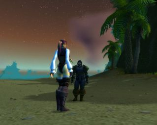

Les Terres de Kirin Tor
Jorian
Points : 23
Joué par :
[ Information masquée ]
Age : 31
Lieu de naisance : Northshire
Signe de naissance : Singe
Sexe : Homme
Race : Nain
Faction : Alliance
Formation : Chaman
Niveau : 60
Guilde : Paix Eternelle (la)
Artisanat 1 : Forgeron
Artisanat 2 : Herboriste
Envoyer un MP
Informations hrp : Jorian n'est pas vraiment un héros. La plupart des gens ne sont pas censés connaître ses "exploits". Et il n'a aucun lien avec les humbles projets roleplay que j'ai pu proposer à la communauté.
La retranscription de sa vie que j'ai mise en ligne sur les Terres de Kirin Tor est directement issue des Carnets de Jorian l'Oubli. Pour avoir un aperçu complet du Cycle de l'Oubli, il vous faudra aussi lire les récits d'Aërwen Telrunyà et d'Ystër.
Ou bien tout simplement consulter la page réunissant toutes les oeuvres autour de ce personnage, à cette adresse.
Description : Jorian est un homme bon et ordinaire, ayant subie une extraordinaire épreuve. Il en a retiré un surnom, "l'Oubli". Il a tissé et détruit des liens dont il ignore presque tout.
Et aujourd'hui il cherche à servir la Lumière, tant bien que mal...
Ère du Renouveau [57]
Lune de la Force [19]
Décade du Panda [11]
Rencontre avec Aërwen Telrunyà
Pour moi, tout a commencé ce jour là. Par une rencontre qui devait bouleverser mon existence.Début de l'Oubli pour Jorian
C'est à partir de ce jour qu'a débuté mon amnésie chronique, un doux enfer : je ne fut jamais clairement conscient de l'atrocité de mon mal. J'oubliais.Début de l'écriture des Carnets de Jorian, à Stormwind
- Les Carnets de Jorian "l'Oubli" - Introduction
« ! // ! Je suis revenu à moi tout à l'heure, en plein milieu de l'allée menant à Stormwind... J'ai eu un hoquet en voyant les héros de la cité légendaire me scruter, du haut de leur dizaine de mètre... Je m'appelle Jorian. Je m'appelle Jorian. Je sais que je m'appelle Jorian. J'oublie les choses... Il faut que je note tout. Ceci est mon premier carnet... Je m'appelle Jorian... Je... ! // ! Je suis revenu à moi et j'ai vu un carnet dans ma main. Ce carnet. Ainsi, j'ai entamé un carnet de route. Bien, c'est une bonne chose. Il va me falloir du papier, beaucoup de papier. Premier objectif : TROUVE DU PAPIER POUR NOTER, JORIAN ! VA EN VILLE ET TROUVE DU PAPIER. »Jorian entends parler de Carol par Aërwen
« ! // ! J'ai trouvé du papier, en ville, comme mon carnet me disait de le faire. Il semble que mes black-out interviennent de façon irrégulière... J'ai eu une demi-heure de mémoire continue tout à l'heure... C'est bien. Il faut que je réfléchisse et que je note. Tout noter. »
« ! // ! Parfait... J'ai plusieurs carnets désormais ! Note importante :
- CARNET ROUGE POUR LES TRAVAUX A ACCOMPLIR.
- CARNET BLEU POUR LES PERSONNES RENCONTREES.
- CARNET VERT POUR LES LIEUX VISITES.
- CARNET MARRON POUR MON JOURNAL
Bon sang... Vite, je met cette note bien en évidence, afin qu'elle soit la première chose que je vois dés que j'Oublie.
! // ! Suis stupide suis stupide suis stupide ! JE SUIS STUPIDE ! Je ferais aussi bien de me suicider... J'ai rangé tous mes carnets dans mon sac, et je les ai oublié... Tout à l'heure, j'ai tout oublié !! Ce n'est qu'en cherchant de l'argent pour me nourrir que j'ai mis la main dessus...
Il me faut un système ! Un système !! »
Alors Jorian, les dents serrées, inscrivit ces fameux mots sur son sac. Des mots qui l'accompagneraient où qu'il aille, démuni de ses souvenirs. Et ces mots dérisoires étaient « TES NOTES SONT DANS CE SAC SI TU OUBLIES QUELQUE CHOSE !»
Rencontre avec Aarhune
« ! // ! Dame Aërwen ! L'Elfe de la nuit ! Une Druide... Comment se fait-il que je me souvienne aussi bien de cette personne quand j'oublie tout le reste ? Son visage et sa voix... TROUVE DAME AERWEN, JORIAN. DECOUVRE QUI ELLE EST POUR TOI.
! // ! Atroce. Suis revenu à moi avec un horrible mal de crâne en plein milieu du vieux quartier de Stormwind. Autour de moi une ribambelle d'enfants chantaient en se tenant par la main « Il n'est pas méchant ! Il n'est pas gentil ! Quoiqu'on lui dise ou fasse : Jorian l'Oublie ! »... Jorian l'oublie... Qu'a-t-il bien pu se passer ? Il semble qu'on m'appelle comme ça désormais. Si ils savaient seulement ce que l'on ressent lorsque...
- Carnet bleu : « Aie rencontré aujourd'hui une petite gnome du nom de Tyllia. Il semble qu'elle suive avec moi l'apprentissage du Vol et de l'Assassinat. Elle était accompagné d'un... mage ?... démoniste ?... du nom de Trakin. »
« ! // ! Je suis au quartier des Mages. Tyllia et Trakin m'ont guidés ici. Je crois. En relisant mes notes, j'ai compris être à la recherche de Dame Aërwen. Dame Aërwen ! Comment se fait-il que je me souvienne de cette personne ? Qu'elle soit la seule personne qui perce le brouillard dans lequel j'évolue ? Je...
! // ! Je viens de rencontrer Dame Aërwen ! C'est bien ce que je pensais, je la connaissais ! J'ai tout écrit cette fois. Elle a assisté à l'accident m'ayant fait perdre mes facultés mémorielles... Un accident ? Pas selon elle. Une sorte d'attentat. Et elle m'a appris que j'étais marié ! A une femme nommée Carol... Carol ? Carol Carol Carol Carol Carol.... Quelle tragédie. Oublier jusqu'à la femme que l'on a aimée.
! // ! Carol ? Ma femme ? Dame Aërwen m'a dit que j'étais à sa recherche lorsque mon... accident est survenu. Carol aurait disparu ? Je... je devrais la trouver, dans ce cas. Même si je ne me souviens pas d'elle, je ne peux abandonner ma femme. Et peut-être que la voir m'aidera ?
« ! // ! TU DOIS TUER HOGGER.
Très important. Ne plus m'inscrire d'ordres brefs comme celui-ci... J'ai passé une demi-heure au sud-ouest de Goldshire à traquer un nain que je prenais pour Hogger, avant que celui-ci ne m'explique que j'étais à la recherche d'un Gnoll. Il m'a montré l'affiche. TUE HOGGER LE GNOLL ! »

« ! // ! Une femme du nom d?Aarhune dit me connaître depuis longtemps. Elle dit que je lui dois de l?argent. Dix pièces d?argent. Dois-je la croire ? Je ne sais pas? Il est tellement simple de profiter de mon Mal. En même temps je ne DOIS pas tomber dans l?engrenage de la paranoïa. Je lui ai donné une pièce d?argent, je n?avais pas beaucoup plus? J?ai mis une note de mise en garde dans mon carnet de rencontre bleu.Départ vers le Lakeshire
- Carnet Bleu : Rencontre avec Aarhune. Femme paladin aux cheveux bruns coupés courts : « ATTENTION, ARNAQUEUSE POTENTIELLE. »
! // ! Il semble que j?ai bien fait ! Une femme du nom d?Aarhune vient juste de m?aborder ! Je n?avais aucun souvenir de sa demande d?argent, mais son nom était dans mon carnet bleu. Elle a tenté de se faire passer pour ma s?ur. Je ne connais pas ses desseins, mais j?ai essayé de m?enfuir le plus vite possible, avant d?oublier son?
! // ! Alors que je courrais, probablement pour fuir la femme du nom d?Aarhune dont il est question plus haut dans mes notes, une femme m?a interpellé. Cheveux bruns, coupés courts. Elle dit s?appeler Francesca mais comment savoir ? Je ne peux tout de même pas me méfier de toutes les femmes brunes !... Il faut que je quitte la région d?Elwynn. Je commence à être trop connu par ici. Il faut que je bouge, tout le temps. »
- Carnet Bleu : Addenda, j?ai eu des renseignement sur la femme du nom d?Aarhune. Apparemment, elle fait partie d?une sorte de secte religieuse vouant une haine farouche aux morts-vivants. Cette femme? Ou plutôt, ce que je sais d?elle aux travers de mes carnets me fait froid dans le dos. J?espère ne plus la croiser.
Arrivée à Lakeshire où Jorian assiste à une étrange transformation
« ! // ! Je vais quitter Elwynn ! J?ai parlé avec Dame Aërwen prêt de l?auberge du Solitaire bleu? Elle a du nouveau concernant la disparition de Carol ! Carol? J?ai été obligé de relire mes notes pour savoir de qui il s?agissait. Oublier sa propre femme? J?espère qu?elle comprendra.
Si je la revois un jour.
! // ! Dame Aërwen souhaite qu?on parte ! Comme je me le suis écrit plus haut, elle a du nouveau concernant la disparition de Carol (Carol ?). Partir chez les réprouvés, les morts-vivants? Ca me paraît bien dangereux. Enfin elle dit aussi qu?il nous faut réunir de l?argent, avant. Nous allons travailler dans les montagnes de Redridge. Et?
! // ! Quoi ! Partir ? Chez les morts-vivants ? Mais je ne veux pas ! Arg? »
« ! // ! Il semble que je sois en route pour Lakeshire, Dame Aërwen est avec moi. Les Elfes de la Nuit ont beau m?intimider, je suis heureux qu?un visage connu soit à mes côtés dans mon brouillard? J?ai eu le temps de relire mes notes. J?espère que tout se passera bien. Nous devrions arriver à Lakeshire au matin.Une mauvaise expérience
Si tout se passe bien.
Note gribouillée rapidement sur un bout de papier arraché : « Un ours? Avons été attaqué par des Araignées géantes? Un Ours a surgit dans mon dos. J?ai cru que ma fin était venue. Mais l?ours s?est jeté sur les araignées, les a déchiqueté, puis s?est effondré? Dame Aërwen, l?ours s?est transformé en Dame Aërwen, je? »
« ! // ! Ce qu?il vient de se passer est extraordinaire? Enfin? Je crois. Pour tout dire, je ne suis pas sûr que cela se soit véritablement passé. Dame Aërwen semblait inconsciente, sur le sol, et moi je venais de perdre la mémoire, de nouveau? Je réveillai la Dame Elfe et elle me demanda ce qu?il s?était passé. Malheuresement, je n?en avais aucun souvenir? Je me suis alors rendu compte que je tenait un morceau de papier à la main? Quelle chance, apparemment, j?avais eu le temps de prendre quelques notes juste avant de perdre mes souvenirs?
J?ai donné la note à Aërwen, elle est restée songeuse.
J?ai moi-même lu la note et j?ai du mal à y croire. C?est pourtant bien mon écriture ! Et je ne suis pas du genre à me faire des farces?
Mais la Dame Elfe m?as dit que ce n?était pas forcément inconcevable? Qu?arrivé à un certain stade de leur apprentissage, les gens de son espèce et de sa formation pouvait? hé bien? se transformer. Malgré cela, elle semblait au moins aussi surprise que moi. »
« ! // ! Viens de relire mes notes? J?ai encore du mal à croire à cette histoire de transformation en ours. Mais après tout, Dame Aërwen est une Elfe et avec eux, il faut s?attendre à tout? Quoiqu?il en soit, nous sommes en vue de Lakeshire. Le jour vient de se lever.
Un garde vient de nous apprendre la situation précaire du village.
J?espère que nous n?aurons pas d?ennui.
J?espère. »
« / !! / Se retrouver à vingt mètres sous l?eau, un collier à la main, et ne pas savoir pourquoi? est une expérience pour le moins troublante que j?espère ne pas avoir à revivre. J?écris ces lignes depuis la berge du lac bordant Lakeshire. A ma sortie de l?eau, une petite fille est venue vers moi, et m?a dit ?Monsieur ! Avant d?aller dans l?eau, vous m?avez donné 10 pièces de cuivre pour que je vous donne cette lettre dés que vous seriez sortie de l?eau ! Alors tenez?? »Un étrange voyage
Contenu de la lettre : Salut mon vieux ! Alors, des trous de mémoire ? Au cas où t?aurait oublié (ah ah !), tu t?appelles Jorian et tu es amnésique chronique ! Pas de chance, hein ? Enfin bon, tes affaires sont derrière le buisson de l?arbre noueux, juste au sud du lac ! Outre ton argent, tes armes et moult matériel, tu trouveras un sac dans lequel tu ranges tous tes carnets. Ne les perds pas surtout, ils sont ta mémoire ! Au fait, j?espère que tu as trouvé le collier du môme?
Signé : Jorian « l?Oubli »
P.S. De toi à moi, t?es franchement un beau gosse.
« ! // ! J?ai rendu son collier à l?enfant, et alors que je me dirigeais vers l?auberge du petit village, j?eu la surprise de la voir complètement délabré ! Je viens de demander à une femme ce qu?il s?était passé et elle s?est contentée de froncer les sourcils. Après une rapide discussion, elle m?a appris que je me trouvé dans le Westfall !!
J?ai consulté ma carte, et Westfall se trouve à des lieues des Montagnes de Redridge, où j?étais il y a un instant seulement ! C?est à n?y rien comprendre? »
Rencontre avec Trevor et départ de la Flamme Divine vers le Lordaeron
« ! // ! J?ai relu mes notes, et je crois avoir une théorie concernant ma ?téléportation? de Redridge à Westfall. Si ça se trouve, j?ai effectivement fait le voyage d?une région à l?autre, mais j?ai oublié d?inscrire ce voyage? Et par un détour pervers de ma mémoire, d?anciens souvenirs ont pris la place de récents. Décidemment, mon cas s?aggrave. Il faut que je note, tout le temps, tout le temps? »
« ? Lueur d?espoir, cela fait maintenant quelques heures que je n?ai rien oublié. Apparemment, mes black-out sont vraiment irréguliers.
Je vais me mettre au service de la Milice du Peuple pour gagner de quoi manger. Je sais me battre, et c?est tout ce qu?ils demandent? »

« ! // ! J?ai fait une rencontre inquiétante, tout à l?heure. Un homme, un prêtre du nom de Trevor. Il disait connaître mon père. Il disait être un de mes amis d?enfance. Comment savoir ? Je n?ai aucun souvenir de mon père ou de mon enfance.
Mais ensuite, cet homme m?a dit faire partie d?un ordre Saint.
L?Ordre de la Flamme Divine
Pour la première fois depuis des semaines, j?ai su, je me suis souvenu. J?ai eu comme un flash?
J?ai relu mes notes, tout à l?heure, et mon pressentiment était justifié. La femme du nom d?Aarhune qui a tenté de m?abuser fait aussi parti de cet Ordre. J?ai eu raison de me méfier?
Et ils seront Douze. Et Douze ils Partiront? Et? Cet homme n?avait plus toute sa tête, c?est évident? Il m?a proposé de rejoindre sa croisade. J?ai refusé. Ils veulent débarrasser le monde des morts-vivants. Les fous. »
« ! // ! La rumeur court à Stormwind. L?Ordre de la Flamme Divine a entamé son périple. Que la Lumière soit avec eux? La Lumière ? Cet ordre doit être aveuglé par la Lumière? Tant pis. Je ne pensais pas que ça m?arriverait un jour, mais ce soir, je souhaite sincèrement oublier. Le visage de cet homme rongé par la Foi. »
« ! // ! Un homme ensanglanté est arrivé en ville. Apparemment, un ordre religieux aurait été décimé, au nord. Qui donc fut assez inconscient pour se rendre en ces terres désolées ? J?ai relu mes notes? S?agirait-il de la Flamme Divine ? En ce cas, tout est bien qui finit bien.
Je ne devrais plus entendre parler d?Aarhune, de Trevor, et de leur damné Ordre.
Je songe à brûler mes notes les concernant. »
Décade du Gorille [4]
Déprime à Darkshire
« ! // ! Je suis à l?auberge du Corbeau Ecarlate. Dehors, c?est la forêt de Duskwood. La nuit éternelle. Ca me fait penser à l?intérieur de mon crâne?Petits bouts de papier...
Je tombe de sommeil. A la lueur jaunâtre d?une bougie suintante de cire rouge ocre, je viens de feuilleter mon carnet bleu. Ce carnet qui contient les noms de toutes les personnes que j?ai croisé, qu?elle soit digne de confiance ou non?
La joyeuse gnomesse Tyllia, le douteux Hobard, le sombre Trakin, Trevor l?illuminé, l?ambigü Aarhune, une habile voleuse Elfe du nom de Ashaï, un certain Madmartigan et son ami Perceval, une jolie (enfin comme toujours, si j?en crois mes notes) servante de la Lumière du nom d?Aeli, Ticlem, un petit homme sans âge?
Ais-je vraiment croisé tous ces gens ?
Et si j?étais fou ?
Et si je m?étais inventé toutes ces rencontres, cette vie couchée sur le papier, pour remplacer quelque chose de beaucoup plus sombre, ou de tout simplement morne ? Peut-être que la réalité est tout autre, que je me mens à moi-même, que tout ça n?est qu?une sorte de jeu. De jeu pervers?
Décidemment, le sombre paysage de Darkshire a une influence néfaste sur mon état d?esprit. Mieux vaut que je dorme, demain sera un autre jour.
Demain, j?aurais oublié tout cela. »
Ca commence par une étrange bourrasque.Avertissement d'Aërwen
Mille petits morceaux de papiers, qui volent dans le vent? Tournoyant, virevoltant, vers le ciel? Et un homme. Debout, immobile, au milieu d?une plaine infinie. Le regard fou, perdu dans l?horizon. C?est de cet homme que viennent les petits papiers.
Il les tire par poignées de sa poche gauche, en regarde parfois quelques un, puis les jettent invariablement, loin, loin?
Sur chacun de ces minuscules morceaux de papier, est écrit un mot, toujours le même :
« Jorian ».
« ! // ! Je me nomme Jorian. Certains me surnomment « l?Oubli », et je n?ai effectivement aucun souvenir. Si ce n?est celui du visage d?une dame Elfe. Et de son nom, Aërwen. J?écris ces lignes depuis une auberge dont j?ai déjà oublié le nom. Ce sont les premières lignes d?un journal que j?entame aujourd?hui.
Je ne sais pourquoi, mais j?éprouve le besoin d?écrire? Ma main semble habituée à cet exercice. Peut-être n?est-ce pas la première fois que je m?y adonne ? Quoiqu?il en soit, je n?ai plus rien. Je suis revenu à moi au milieu d?une plaine, tout à l?heure, sans affaires, sans rien. Si ce n?est des dizaines de petits papiers, dans ma poche gauche, avec mon nom inscrit dessus.
Ca n?a aucun sens ! Que signifient ces petits papiers ? Et pourquoi n?ais-je aucun souvenir ?
Je? »
Alors que Jorian écrit ces mots, accoudé à un comptoir crasseux, le tavernier lui tapote l?épaule. « Hey Msieur ? Vous avez oublié ça en partant, ce matin ! Faites gaffe, zoublirez vot? tête, un jour ! » Et il part d?un grand rire, persuadé d?avoir réinventé la notion d?humour. Dans ses grands bras poilus, il tient un sac sur lequel est inscrit « Tes notes sont dans ce sac si tu oublies quelque chose. » Jorian tremble un peu? prends le sac dans ses bras, et monte dans sa chambre.
Une fois en haut, il ouvre le sac, en extrait un calepin, et se met à le lire.
C?est sa vie qui est relaté ici !
Mais soudain il est pris d?un doute ? Et si on cherchait à l?abuser ? Et si ces carnets étaient des faux, destinés à lui faire croire qu?il a vécu telle ou telle vie ?
Il n?y a qu?un moyen d?en avoir le c?ur net. Il déchire un petit morceau de papier, il y écrit son nom, et il compare l?écriture avec celle des carnets. Ca correspond ! C?est bien lui qui a rédigé toutes ces notes.
Soulagé, il se plonge dans la lecture de son histoire.
Et c?est presque machinalement qu?il enfoui dans sa poche gauche le petit morceau de papier sur lequel il vient d?inscrire son nom?
« Jorian, puis-je parler à vous une seconde dans le privé ?
- Bien sûr, Dame Aërwen? »
- Jorian, que vous trouviez des amis pour vous aider dans votre cherche pour Carol, cela est bien. Mais vous devez malgré cela restez dans le méfiance toujours.
- La méfiance ?... Je? Je ne comprends pas.
- Nos ennemis, ceux qui ont enlevé Carol de vous, et attaqué vous lorsque vous perdez le souvenir, sont en tous endroits et très puissant. Eux chercheront vous de nouveau après vous s'ils connaissent qu'ils ont échoué de enlever votre vie. Vous devez être sûr avant de conter votre histoire aux autres.
- Oh? Je vois. Oui? Vous avez raison.
- Je connais certains de eux et je pourrais aider de les reconnaître. N'hésitez pas à consulter moi avant de offre votre confiance.
- Bien. Merci. Merci pour tout, Dame Aërwen? »
« ! // ! La Cathédrale de Stormwind.
La majesté de ce bâtiment est à couper le souffle. Van Cleef et ses architectes ont vraiment fait un boulot merveilleux. Tiens, étrange, je me souviens de faits historiques quand je serais incapable de dire ce que j?ai mangé ce matin.
Si j?ai mangé ce matin.
« ! // ! La paix et la sérénité imprègnent réellement ce lieu. Est-ce donc cela, la Lumière ? J?ai relu mes notes, je suis ici pour demander pardon pour une vie que je vais prendre, dans les prisons de la ville. La Lumière peut-elle réellement approuver ce genre d?acte, même pour « la bonne cause » ? Autant savoir une fois pour toute? »
« ! // ! Caitlan, Metellia, Byron, Khira? L?encre qui a servi à tracer leur nom dans mon carnet bleu n?est pas encore sèche, et je les ai déjà oublié. Pourtant, relire ce qu?il s?est passé à l?instant dans la Cathédrale me donne les larmes aux yeux. Ces personnes ont eu vent de mon malheur. Caitlan a trouvé un de mes carnets, égaré dans les Westfall? Elle et son amie Metellia l?ont d?abord pris pour une sorte de manuel pour enfants, avant de comprendre de quoi il s?agissait? Je viens de les croiser dans la Cathédrale, où elles travaillent?
Ses compagnons et elles se proposent de me venir en aide, de trouver une cure, et de m?aider à retrouver Carol.
Ma femme Carol. Un nom redécouvert dans ce carnet que j?avais égaré.
Tout un pan de ma vie ressurgissant des limbes?
La Lumière a-t-elle décidé cette rencontre ?
Mais? »
« ! // ! Dame Aërwen, surgie de nulle part, comme à son habitude, à manifester le désir de me parler en privé. Je pensais qu?elle serait ravie de ce soutien inespéré mais? Elle m?a donné à réfléchir. Effectivement, d?où viennent Caitlan et ses amis, finalement ?
Puis-je vraiment leur faire confiance ?
La Lumière qui tantôt semblait si forte, se met à vaciller dans mon âme. Je suis un voleur, je suis Jorian l?Oubli, et je ne peux me fier à personne. »
(Félicitation à Caitlan et Metellia, donc, qui ont su trouver une manière originale et cohérente d?aborder Jorian ! Ces deux personnes semblent de plus avoir beaucoup de bonnes idées de background et d?aventures à long terme, peut-être serais-je donc amené à les recroiser. Si vous voulez vous joindre à nous, ou simplement croiser ces vies futiles qui se battent contre un seul ennemi : l?Oubli, rendez vous sur Kirin Tor !)
Décade de l'Ours [4]
Arrivée au Manoir de Ravenholdt
Système de rubans noués aux dagues. La guilde des Assassins.« ! // ! Si j?en crois mes notes, j?ai erré dans les montagnes durant deux jours et deux nuits. Mais ça y est, je l?ai enfin trouvé. Ravenholdt? Le repaire de la guilde des Assassins.
A voir les gardes à l?entrée, et leur air suspicieux lorsqu?ils m?ont vu arriver, en relisant mes notes, il n?y a aucun doute, je suis bien arrivé.
Je ne sais pas trop ce que je suis venu chercher ici? Apparemment, mes faits d?armes ont intéressés le maître des lieux, mais ne vont-ils pas rire de moi lorsqu?ils s?apercevront de mon handicap ?... On verra bien? »

« ! // ! Il semble que j?ai trouvé un bon système pour me souvenir constamment de mes objectifs à court terme : j?enroule un petit ruban autour de ma dague. Autour de ma lame est maintenant inscrit « FAIS LES POCHES DES MEMBRES DU SYNDICAT », et en relisant mes notes, il s?avère effectivement que je doive rapporter des insignes du Syndicat au maître de Ravenholdt, pour lui faire bonne impression.Rencontre avec Reibereth Marcherêve et Murgond Barbefeu
Si je reste concentré sur ma lame, je n?oublierai pas. J?espère que je repenserai à utiliser ce système, par le futur ! »
Départ de Jorian et Aërwen vers Stranglethorne
« ! // ! Je viens de faire une très touchante rencontre? Un paladin, portant le nom de Reibereth Marcherêve. Il semble que nous nous soyons connu, mais je n?en suis pas sûr. Il m?a donné sa bénédiction, et confié aux soins de la Lumière.
Il dit que mon nom est Jorian l?Oubli. Je le sais? Je n?oublie jamais mon nom. Peut-être a-t-il voulu officialiser la chose ? Est-ce mon véritable nom, désormais ? »
« ! // ! Rustre, grossier, intolérant, sale, tapageur, sans-gêne, grognon ! Les mots manquent !
Murgond !
Le nain le plus bruyant des deux continents? Il ne semble pas avoir un mauvais fond, mais mieux vaut ne pas l?énerver. En tout cas, mon affliction semble plus l?amuser qu?autre chose? Au moins ne cherche-t-il pas à en profiter. Enfin je crois? Sa maîtrise de la hache est étonnante, par contre. Il a essayé de m?emprunter de l?or, à l?instant !
Si son nom n?apparaissait pas dans mon carnet bleu comme celui d?une ancienne connaissance, je n?aurais jamais cru qu?un être aussi irritant puisse faire partie de mes relations. Le pire c?est que j?ai écrit que je l?aimais bien ! Incroyable?
Enfin, si je l?ai écrit? »

« ! // ! Je discute en ce moment avec Dame Aërwen. Elle me révèle enfin des choses importantes sur mon accident, et sur ce qui a pu arriver à Carol. Je note au fur et à mesure.
Nous sommes dans la vallée de Stranglethorn. La Horde est très présente, ici? Mais cela ne semble pas déranger Dame Aërwen.
Donc elle fait partie d?un groupe. Une sorte d?organisation. Quel nom ? Elle ne veut pas le dire pour le moment, elle ne veut pas que ce nom soit écrit. Organisation secrète ?
C?est une organisation pacifique. Ils cherchent à amener la paix dans les royaumes d?Azeroth. La paix ? Avec la Horde ? C?est impossible? Elle me dit que des membres de sa faction appartiennent à la Horde. Une entente est donc réalisable ? C?est? troublant.
Carol? Carol était? est (je ne dois pas parler d?elle au passé !) médecin. Elle appartient à l?organisation dont Dame Aërwen me parle, c?est comme ça qu?elles se sont connues. Faisais-je moi aussi parti de cette organisation ? Dame Aërwen me dit que non?
Mais qui a enlevé Carol, dans ce cas ? Les bellicistes. Selon Dame Aërwen, il existe dans les deux factions des gens qui ont intérêt à ce que la guerre continue. Et apparemment, Carol les gênaient un peu trop?
Mais alors, où est-elle, maintenant ? Dame Aërwen a une piste? Il ne s?agit plus des réprouvés, mais de Booty Bay. Booty Bay ? Mais je connais ce lieu, il appartient à l?Alliance ! Les ravisseurs de Carol ne pourraient tout de même pas faire partie de l?Alliance, si? ?
(cliquez sur l'image pour lire le dialogue et poursuivre le récit)
Dame Aërwen n?en sait pas vraiment plus. Elle a infiltré une guilde nommée les Buccaneers. Des loups de mer bloqués à terre, qui trempent dans toutes les affaires louche du Royaume de l?Est.
Elle espère pouvoir en apprendre plus à leur contact. Elle me demande de travailler aux abords de la baie en attendant, elle pourrait avoir besoin de moi.
Carol peut-être enlevée par l?Alliance, la paix avec la Horde, des bellicistes, les Buccaneers, Booty Bay? Tout va trop vite. Ces notes sont très importantes. Je vais les ranger dans un carnet à part, retraçant les points capitaux de notre enquête.
Verrais-je un jour enfin la lumière, au bout de ce long tunnel obscur ?
Si oui, cette lumière portera le nom de Carol. »
Lune d'Agilité [25]
Décade du Tigre [5]
Un cheval nommé "Souvenir"
« / !! / Je suis Jorian l?Oubli, je souffre d?amnésie chronique. J?ai relu toutes mes notes et une chose semble claire?Korial l'Historien
Je guéris.
C?est à peine perceptible au long des pages, mais ça ne fait malgré tout aucun doute. Le fil de ma mémoire s?épaissit, mes temps de lucidité s?allongent, mes écrits sont moins hachés? Je pense que?
/ !! / Mouais, je me suis retrouvé avec le carnet dans les mains, sans trop savoir de quoi il s?agissait. J?ai encore du travail. Mais il y a de l?espoir ! »
« / !! / Bon. Comme je n?y ai pas fait référence dans mes notes précédent, cela doit être quelque chose d?assez nouveau : J?ai un cheval. Je ne sais pas trop comment j?ai fait, ni d?où je sors cette vieille carne têtue, mais il semble que je sache monter.
Sur la bride, on a brodé « Souvenir ». Il semble que ce soit le nom que j?ai donné à la bête. Comme quoi même quand je pédale dans la choucroute Troll, je ne manque pas d?esprit. J?imagine que cette private joke me fera rire à chaque fois que je regarderai la bride?
Attaché à la lanière de cuir, des rubans m?indiquent ma destination, ainsi que la direction à suivre. Le problème, c?est qu?il faut que je m?y rende pour découvrir ce que j?ai à y faire, en relisant mes notes.
Mais surtout? j?ai l?impression que l?animal a compris mon handicap. Et qu?il se fout bien de moi ! »
« ! // ! Je viens de croiser un historien du nom de Korial. Historien? Le passé me fascine. »Rencontre avec Fulzym la crapule
Embuscade
« ! // ! Un mendiant gnome vient d?essayer de me faire les poches ! J?ai rarement vu une créature aussi laide? Mais la petite fouine ne manquait pas d?habileté. Enfin, ma main s?est refermée sur son poignet avant même qu?il ne touche ma poche. Je suis Jorian l?Oubli, mais je ne suis pas Jorian le Débile, ce n?est pas un débutant qui m?aura à mon propre jeu. Ma rapidité semble l?avoir impressionné, c?est toujours agréable d?épater la bleusaille.
Je l?ai un peu interrogée, il dit s?appeler Fulzym, et traîner dans les bas-fonds de Stormwind. Apparemment, il a des problèmes avec je ne sais quel Marshall. Je crois que ce n?est pas la première fois que je le croisais, mais il faudra que je relise mes notes.
Quoiqu?il en soit je l?ai renvoyé à la rue. Je lui aurais bien proposé du travail, mais je ne me sens pas d?embaucher un type qui ne chercherait qu?à me délester de mon or. »

Extraits des notes de Jorian :"Khérin", l'apprenti
« ! // ! J?ai reçu une missive, un rendez-vous de Fulzym? Fulzym ?
J?ai relu mes notes, je me demande ce que cette canaille peut bien me vouloir. Il me donne rendez-vous dans un coin désert, dans le quartier commercial de Stormwind. Autant aller voir ce qu?il veut, après tout, il ne peut pas me faire grand-chose? »
Au rendez vous :
La porte s?ouvre en grinçant. Il fait sombre, dans le vieux théâtre désaffecté. Les couinements de quelques rats indiquent que le lieu n?est pas tout à fait désert?
Lorsque Jorian rentre dans la salle, la note du rendez-vous à la main et une rapide description de Fulzym au verso, il se demande si il ne s?est pas trompé d?endroit. Comme toujours. Mais non, une voix s?élève au fond de la salle, une voix nasillarde.
« Ah, vous voilà enfin, Messire Jorian? »
Juché debout sur la rambarde bordant la scène, torse bombé, le gnome surplombe Jorian. Il le fixe de ses petits yeux sardoniques. Jorian fronce les sourcils? puis lit sa note.
« Que me veux tu, Fulzym le Truand ? Je n?ai pas de temps à perdre avec les gens de ton espèce !
- Ah non ? C?est ce qu?on va voir? »
Le petit homme claque des doigts. Quelque chose bouge derrière Jorian? Ce dernier pousse un juron, tente de se retourner mais trop tard ! Le fil d?une dague est déjà collé contre sa gorge. « Un mouvement, et vous êtes mort. », souffle une voix de femme, un peu rauque.
Jorian est partagé entre la colère et l?admiration? Il n?a vraiment pas vu la femme venir, c?est impressionnant. Elle a sûrement du étudier la maîtrise des illusions pour arriver à un tel résultat.
Le gnome jubile. Il s?approche de Jorian d?un air moqueur, et lui arrache ses carnets.
« Voyons voir, Messire l?Intouchable, ce que vous notez aussi inlassablement?
(cliquez sur l'image pour lire le dialogue et poursuivre le récit)
- Fais le malin, mon grand? Ton handicap me donne idée.
- Qu?est-ce que? » grogne Jorian.
Mais déjà, le gnome arrache certaines pages du carnet. Jorian hurle. Chaque page arrachée est un souvenir perdu à jamais. Chaque page arrachée est un souvenir perdu à jamais. Chaque page? Il serre les dents.
« Prie pour que je t?oublie, petit homme. »
« Ne t?inquiète pas, mon grand, je me contente d?effacer mon existence de ta? mémoire, ricane le petit homme.
- le gnome chauve t?as volé des pages, le gnome chauve t?as volé des pages, le gnome chauve t?as volé des pages, le?
Jorian répète inlassablement ce mantra, dans l?espoir de le conserver en tête. Le gnome fait un signe de tête à sa comparse :
« Tirons nous. »
Il jette alors les carnets aux pieds de Jorian, et file vers la sortie. Sa complice le suit aussitôt. Jorian s?élance à leur poursuite, tout en répétant encore et encore la même phrase. Il parvient à saisir le poignet de la femme au dernier moment. Mais Fulzym est déjà loin !
Jorian, envahi par la rage, sort alors ses dagues et les presses contre la gorge de la femme. « QUE S?EST-IL PASSEE, GARCE ??! »
La femme sourit, et réponds « Je ne sais rien et bientôt, tu ne sauras rien toi non plus? » Jorian pousse un cri de frustration, jette la femme à terre et hurle : « PARLE ! »
Tout ce raffut attire du monde? A l?extérieur, deux nains s?approchent.
Jorian respire de plus en plus profondément. Il sent que la situation l?échappe. Il sent qu?il commence à oublier.
Alors, dans un sursaut, il entaille la joue gauche de la femme. Et la relache. Tandis qu?elle s?enfuit, il se jette sur ses notes, qu?il ramasse fébrilement? D?une main tremblante, il écrit?
« ! // !!!! Ne sais pas ce qu?il s?est passé. Se méfier de la femme à la cicatrice. Joue gauche. Relire mes notes. Vite. Comprendre. Crois qu?on m?a abusé. Carnets par terre. Pages perdues ? Pages perdues, pages perdues?
Pages perdues? »
(hrp : mes sincères compliments à Fulzym et Djezebel la voleuse, qui m?ont réellement surpris. Il faut savoir que cette scène n?a aucunement été prévue à l?avance, et que je me suis autant « fait avoir » que Jorian. Malgré son niveau inférieur, la dame Djezebel est restée totalement invisible durant tout le début de la scène, et ce grâce à ses 4 points dans le talent « Maître des illusions ». Quand Gameplay rime avec Roleplay, j?ai aussi envie de dire, merci Blizzard)
« ! // ! Cela faisait longtemps que je n?avais pas relu mes notes. L?impression qu?elles me laissent est étrange? Il y a de l?espoir, il semble que je commence à guérir, à de moins en moins oublier? Et il y a du danger. Il semble qu?on m?ait abusé. Une femme avec une cicatrice? Un certain Fulzym, qui m?a donné rendez-vous. Etrange, je parle de ce Fulzym dans mon carnet comme de quelqu?un que je connaîtrais, et pourtant je n?ai trouvé aucune note le concernant. Il doit sûrement être derrière tout ça?
En attendant, j?ai décidé de prendre de l?aide. Cela faisait longtemps que j?y songeais, et c?est maintenant chose faite ! Il se nomme Khérin, il s?est présenté à moi comme cherchant du travail, et il semble très habile. Il sera mon serviteur, ma mémoire, et mon disciple. Je le nourrirais, l?équiperai, lui enseignerait l?art du combat de l?Ombre. Et en contrepartie il m?aidera à ne pas perdre le fil, il préparera le repas, et il s?occupera de Souvenir, mon cheval (j?ai un cheval !).
Bien que très laid, il semble être un gnome de confiance. »
Khérin
(hrp : La question m?ayant été posé, et même si cela peut paraître évident pour la plupart d?entre vous, les Carnets de Jorian « l?Oubli » se situent dans une antique bibliothèque inter-dimensionelle, à laquelle les personnages vivant dans le monde de Warcraft n?ont évidemment pas accès. En gros, cela signifie que vos personnages ne connaissent pas Jorian ou même les infamies de Fulzym juste parce qu?ils les ont lus ici? A moins que vous ne trouviez une raison réaliste pour en avoir pris connaissance ! (pour tout dire, je pense ici au malheureux Fulzym qui s?est fait agresser par des lecteurs un peu trop assidus...))
Décade du Singe [9]
Joueur de cartes
Dans le silence velouté de la nuit, la majorité du bon peuple d?Azeroth dort.Une pensée pour Aërwen
Certains d?entre eux se battent, guerroient par delà-le monde.
D?autres suivent fiévreux les enchères de la bourse dans les entrailles d?Ironforge.
Et un homme, assis en tailleur sur son lit, le visage concentré, joue seul aux cartes.
Le jeu semble excessivement simple.
Il prends une carte, la contemple, tente d?en graver l?image dans son esprit. Puis il la pose sur le drap, face retournée. Il attend quelques minutes et? si il parvient à en deviner le motif, il sourit, satisfait, et recommence.
« ! // ! Dame Aërwen? Ce nom flotte encore à la lisière de mon esprit, imperturbable. J?ai relu mes notes, mais cela fait longtemps qu?elle n?y apparaît pas. J?espère qu?elle n?a pas eu d?ennui avec les Buccaneers, qu?elle m?a dit avoir infiltré, dans un vieux carnet. »Les quatre "D"
« ! // ! Je viens de revoir Khérin, mon apprenti. Je ne me l?imaginais pas aussi laid, même en lisant mes notes ! Quoiqu?il en soit il revenait d?une mission que je lui avais confié, et il s?en est admirablement tiré. Il s?est aussi occupé de Souvenir (mon cheval ?), et il nous a préparé à manger. C?est un bon ptit gars? Je me demande ce que je pourrais bien lui apprendre sur l?art du Combat Obscur? J?ai tendance à me battre à l?instinct? Peut-être devrais-je lui parler des quatre « D » ? »Rendez-vous avec Djezebel
- Dis moi Khérin, connais tu les quatre « D » ?
- Les katredé, Maître Jorian ?
- L?approche standard de tout adversaire humanoïde, par les Voleurs digne de ce nom !
- Je vous écoute, Maître.
- Bien, c?est simple? D?abord tu as la Dissimulation, tu te planques, quoi ! Ensuite la Distraction, un petit caillou jeté derrière ton adversaire afin qu?il se retourne fait généralement l?affaire? Après cela, tu as le Détroussage, évidemment. Nous nous faisons un point d?honneur à faire les poches de nos victimes avant de les envoyer rejoindre la Lumière. Et enfin, la phase dite, du Dérouillage. Ou tu dérouilles la tronche de ton adversaire. Tu as compris ? Dissimulation, Distraction, Détroussage, Dérouillage? Les Quatre « D » !
- Oh? Bien, Maître.
« ! // ! Un étrange perroquet m?a apporté une missive. Une lettre à mon nom. Une personne qui signe « D » me donne rendez vous à Booty Bay? Je me demande ce qu?elle veut. Une admiratrice secrète ? »
- Au fait, Khérin, t?ais-je déjà parlé des quatre « D » ?
Le petit gnome chauve soupire.
- Oui Maître Jorian, souvent? Il y a Dissimulation, Distraction, Détroussage et? Démembrement !
Une lueur malsaine flotte un instant dans le regard du petit homme.
- Heu? C?est presque ça, Khérin, c?est bien? Bon, je vais te confier une autre mission. Je dois me rendre à Booty Bay. Nous nous retrouverons lors du levée de la troisième lune écarlate, c?est bien compris ?
- Bien, Maître.

Première partie de la thérapie de "D"
« ! // ! Je suis arrivé à Booty Bay, comme mes notes m?indiquaient de le faire. Un peu en avance sur l?heure du rendez-vous? Plus qu?à attendre. Je me demande ce que ce fameux « D » aura à me dire. »

Des informations sur Carol
Booty Bay. Son port qui sent le poisson, et ses plages qui puent la mort.
Sur le ponton où accostent régulièrement les vaisseaux en provenance de la terrible Kalimdor, derrière quelques caisses, deux humains discutent. Un humain et une humaine, pour être précis. L?un des deux est amnésique chronique.
« Pourquoi m?avez-vous fait venir ? Et qui êtes vous ? demande Jorian à la femme, en exhibant la note qu?il a reçu plus tôt.
- Moi ? Regardez vos carnets, si vous avez perdu la mémoire?
La femme au maintien droit et ferme, arbore une cicatrice sur la joue gauche.
Lentement, Jorian tire un carnet de notes de son sac. Rien dans les rencontres récentes qui ressemblent à la femme.
« Vous pensez vraiment que vos carnets vous protègent de tout, hein ?
- Autant que le fil d?un funambuliste le protège du vide, oui. »
Sous le coup d?une intuition, il jette alors un ?il aux « Derniers Evènements Importants ».
Soudain il fronce les sourcils, relève la tête et fixe la cicatrice de la jeune femme.
« Vous êtes Fulzym ! »
La femme éclate de rire.
« Mon pauvre ami, vous êtes vraiment dans le brouillard? Non je ne suis pas Fulzym, je travaillais seulement pour lui lors de l?incident. Et n?insistez pas, je ne compte pas vous en dire plus. Je souhaite seulement? vous aider. »
Jorian, comme toujours, est complètement perdu. Et Jorian, comme toujours, saisit les questions comme elles viennent, sur l?instant?
« Me? M?aider? ? Et m?aider à quoi, Mademoiselle ?
La jeune femme a un sourire narquois.
- Vous aider à guérir, bien sûr. A ne plus oublier. »
La Thérapie de « D », Première partie :
« Bien tout d?abord, je veux que vous ne notiez rien de tout cela. Tout d?abord parce que vous ne devez pas vous souvenir de moi. Et ensuite parce que vous ne pourrez jamais guérir si vous vous appuyez constamment sur ces carnets. »
Jorian hoche la tête.
« Parfait. Ensuite, il faut que vous me fassiez confiance. Mon exercice mémoriel prouvera votre confiance. »
La jeune femme braque son regard sur celui de Jorian :
« Et avant que vous ne posez la question : Non. Vous n?avez aucune raison de vous fier à moi. »
Elle sort une dague de son fourreau.
« Et maintenant, Jorian, tendez le bras droit. »
Jorian ne dit rien. Son destin joue à la balançoire, ici? Dans l?espace étriqué de l?Instant, cerné par deux Oublis.
Sur un coup de tête, il tend alors le bras.
Lentement, avec application, la jeune femme grave alors avec sa dague un « D » croisé d?une barre, sur l?avant-bras de Jorian. Celui-ci sert les dents. Le sang dégouline, et forme une petite flaque sur le sol. C?est fini. La femme bande alors la plaie vive.
« C?est fait. Désormais, je serais ?D?. A vous devoir à quoi vous associerez cette lettre. J?espère que la notion de confiance surgira au travers de la douleur, ce qui me permettra de poursuivre votre cure. Et maintenant commençons. Fermez les yeux ».
Jorian jette un dernier regard vers son avant-bras, et s?exécute.
Mademoiselle « D » sort alors une pomme de son sac à dos. Elle en croque un morceau, puis la tends sous le nez de Jorian.
« Inspirez? Qu?est-ce que ça vous évoque ?
- Heu? une pomme ?
- Ne faites pas l?idiot? Respirez lentement, et laisse vous pénétrer par l?effluve. A quoi rattachez vous cette odeur ? »
Jorian se sent soudain partir. Comme si le sol s?effondrait sous ses pieds.
Des rires des rires aigus claires les rires il fait jour lumière belle lumière et chaud très chaud essoufflé suis essoufflé couru beaucoup amis des pommes mangeons des pommes ensemble tous ensemble des pommes volées des pommes voler des pommes dans la ferme couru fermier essoufflé rouge pomme volées manger ami chaud. C?est bon.
Il ouvre soudain les yeux, revenant brusquement à la réalité. Sa plaie lui fait mal, mais il est heureux.
« J?étais tout gosse ! Nous avions chapardé des pommes dans une ferme d?Elwynn, avec des amis ! Je? C?est? »
La femme sourit. Il semble vraiment y avoir de l?espoir. Jorian est subjugué :
« C?est? C?est donc à ça que ça ressemble, un souvenir ? »

« ! // ! Ai erré un moment dans la jungle de Stranglethorne. Cette verdure étouffante, l?incessant piaillement des milliers de bêtes, dans les arbres, sous la terre, j?ai cru devenir fou? Mon avant-bras me démangeait, j?ai regardé, il s?y trouve une étrange cicatrice. Un D barré. Qu?est-ce que cela peut bien signifier ? »
« ! // ! Où suis-je ? La jungle de Stranglethorne ? J?étais à Booty Bay, si j?en crois mes notes, cela semble logique? Viens de tomber sur une immense ruine. C?est gigantesque. Terrifiant aussi? Je? »
Jorian ne le sait pas, mais il fait face à l?imposante Arène de Gurubashi.
Insidieusement, les bruits de la jungle se transforment. Les cris des oiseaux sonnent comme la plainte des blessés. Le crissement des insectes mue en fracas d?armes et d?acier. Des siècles de combats sans merci hantent la moindre des pierres.
Comme hypnotisé, Jorian avance, au milieu de la longue allée menant au c?ur de l?arène.
Un millier de spectateurs fantômes rugissent leur satisfaction, tandis qu?il progresse lentement. Dans le silence de la nuit.
Pourtant, il n?est pas tout à fait seul. Loin, sur les gradins, il aperçoit soudain une silhouette. Il s?approche, la silhouette ne bouge pas. Inexplicablement, une image, toujours la même, surgit à nouveau dans son esprit. C?est une Elfe sans âge, les cheveux blancs, le regard vide. Dame Aërwen.
C?est elle, sur les gradins. Tel un automate, il s?approche encore. Elle ne semble pas l?avoir remarqué. Elle semble plongée dans des pensées inaccessibles au commun des mortels.
« Dame Elfe ? »
Elle se retourne?
(cliquez sur les images pour lire les dialogues et poursuivre le récit)
- ?.Je réfléchissais. Vous tombez bien, je justement désirais parler à vous. »
- Je? ne me souviens de rien. Mais pourtant, l?image d?une Elfe, d?une druide m?accompagne.
- Oui.
Jorian se laisse pénétrer par la colère. C?est si bon. Il ne le sait pas, mais cela fait longtemps qu?il n?a pu exprimer sa frustration.
Mais déjà, Dame Aërwen poursuit ses explications?
La druide Elfe réfléchit un instant?
« Jorian, vous devez écouter moi. Vous bientôt devrez partir en Kalimdor? Mais le voyage être périlleux et difficile. Il faut vous bien entraîner.
De ce voyage ne dépendra pas uniquement le destin de Carol? »
La Dame Elfe a toujours autant de mal à parler l?humain? Mais Jorian a saisi le message. Il en prend rapidement note, afin que celui-ci ne se perde pas.
La jungle de Stranglethorne est étrangement calme, comme si elle se préparait aux évènements à venir?
Décade du Faucon [11]
Rencontre avec Vladam le Vagabond
« ! // ! Je me nomme Jorian, j?ai une cicatrice en forme de D barré à l?avant-bras droit, et je n?ai aucun souvenir. J?avais des notes, je crois. Je n?ai plus rien. Plus qu?une lettre reçue à l?instant. Un rendez-vous au sud de Duskwood. Suis dans la forêt. Il fait sombre. J?ai reçu une lettre. Dois me rendre au sud de Duskwood. Une lettre.Récupération des Carnets
! // ! Il dit s?appeler Vladam. C?est un vagabond. Il me parle d?une entité à la puissance inconcevable. Une entité millénaire. Onu. Je ne comprends pas. Qui est ce type ? Je lui demande. Il ne me répond pas. Il est évasif. Il est Vladam. Pourquoi voulait-il me voir ? Il veut me mettre en garde. Onu lui a demandé de me mettre en garde. Me mettre en garde contre quoi ? Contre l?Elfe. Je dois me méfier de l?Elfe. Il dit ne pas en savoir plus. Il dit qu?il n?est qu?un messager. Je n?insiste pas. Je ne comprends rien. »
« ! // ! Un perroquet m?a apporté une missive. La signature est identique à la cicatrice sur mon bras ! Mes notes? Mes carnets sont à l?Abbaye de Northshire. Le temps de nouer un ruban à ma dague, et je me met en route. Il faut que je sache. »Le retour de "D"
« ! // ! Plus que cinq encoches à ma dague, et j?aurais neutralisé suffisamment de ces pirates bloodsail pour réclamer la récompense. L?air marin est vivifiant ! Ah, j?aperçois l?une de ces canailles, qui s?éloigne un peu trop de son camp. Allons lui montrer la Lumière? »Troisième partie de la thérapie de "D"
Tandis que Jorian se bat, tandis que ses dagues accomplissent cette danse quasi-rituelle, inoubliable, ancrée avec la force de l?instinct, une silhouette s?approche de lui. Silencieusement. C?est une femme. Elle observe Jorian un moment, puis s?adresse à lui?

« Je vois que tu as récupéré tes carnets?
Jorian se retourne, surpris? Un pirate gît à ses pieds. Il fronce les sourcils? Cette femme lui rappelle quelque chose? son avant-bras l?élance étrangement.
- Vous êtes la femme qui m?a fait cette cicatrice, c?est bien ça ? ».
Elle hoche la tête.
« J?avais perdu mes carnets ? Expliquez moi? »
La femme semble assez irritée. Apparemment, elle cherchait à le guérir de son mal, pour qu?il n?oublie plus. Mais Jorian, suite à un quelconque douloureux souvenir concernant sa mère, aurait jeté le sac contenant tout ses carnets au loin. Prétendant ne plus vouloir se souvenir. La femme a alors confié le précieux sac à l?abbaye, avant d?envoyer un message à l?aventurier.
Et maintenant, désire-t-il se souvenir ?
« Je? Je ne sais pas si je tiens à me souvenir. Mais je ne veux plus oublier.
- L?un ne va pas sans l?autre. Suivez-moi. »
La Thérapie de « D », Troisième partie :Un étrange rêve...
« Asseyez vous », exige la jeune femme.
(cliquez sur les images pour lire les dialogue et poursuivre le récit)
Les vagues le doux bruit des vagues infini continu AOUH grande douleur au ventre (Jorian crache un peu de sang) pourquoi tu tapes si fort papa pas si fort j?en ai marre je ne veux plus m?entraîner assez plus d?entraînement allons nous baigner plutôt nous baigner OUCH bien pardon papa recommencer encore nous recommençons bien cette fois je vais faire mieux cette fois tu ne m?entendras pas venir comme l?ombre bien papa faire un avec l?ombre?
Mais une discussion tire Jorian de sa rêverie. Il reprends brutalement contacte avec la réalité. La femme semble satisfaite.
Jorian progresse, son passé ressurgit, son enfance d?abord et maintenant son adolescence. Ils arriveront bientôt à l?instant fatidique. A l?incident ayant dérobé l?esprit du voleur.
- Vous? il y avait du blanc n?est-ce pas ? bredouille Jorian.
- Oui.
Jorian pousse un soupir de soulagement. Tout ce travail lui donne mal à la tête?
Il prends une poignée de sable dans sa main, et le laisse couler entre ses doigts. Ca lui fait penser à l?intérieur de son crâne?

Rencontre avec Esther
« ! // ! Je suis sur un lit de paille, dans une auberge miteuse. Je viens de me réveiller. J?ai fait un rêve. Il y avait un Seigneur Elfe je crois, et un oiseau? Sauf que je ne sais PAS si c?était un rêve !
Peut-être était-ce un éclat de souvenir ? J?ai rapidement parcouru mes notes? Aërwen, la flamme divine, Carol, Fulzym, Metellia, Khérin?
Rien ne semble se rapporter à cette étrange image. J?imagine que ce n?est pas la première fois que je suis confronté à ça. Qu?est-ce que j?ai véritablement vécu ? Qu?est-ce qui appartient à mes rêves ? Quels sont mes souvenirs déformés ?... QUELLE IMPORTANCE ! Je vais oublier tout ça dans quelques? »
Le regard vide, le corps las, Jorian se tourne sur le côté et se met à pleurer, tout doucement. Avant que le sommeil et l?Oubli ne l?emportent.
(hrp : ce carnet est un peu spécial, car il avait pour but de lancer le premier Concours de l'Oubli... Vous pouvez trouver le sujet du concours et les résultats à cette adresse)
Une dispute vient d?éclater sur le parvis de la Cathédrale, à Stormwind.Rencontre avec Lethiel
Rien de violent. Une simple altercation. Mais les deux femmes impliquées attirent l?attention de Jorian, qui se dissimule derrière un arbre afin d?écouter la conversation.
La première des femmes se tient bien droite, a le regard franc, et porte des habits de tissu blanc et or. Tout laisse penser qu?il s?agit d?une puissante Prêtresse de la Lumière.
Quant à la seconde, une courte coupe de cheveux noirs encadre son visage au teint sombre. Elle arbore une longue robe bleu nuit et rouge. Ses yeux ont la couleur du jais. Une? démoniste ?
Au plus fort du débat, Jorian prends des notes :
Carnet de Jorian :
« ! // ! Suis à Stormwind, je crois. La cathédrale me surplombe, je dois avoir quelque chose à y faire. A moins que je n?en sorte ? Quoiqu?il en soit, j?écoute en ce moment la discussion de deux femmes. Une représentante de la Lumière, et une invocatrice de l?Ombre. Leur conflit me trouble.
Nous sommes en guerre. Mais où se trouve le mal ?
Qui est condamnable ?
La Horde ? Les Orcs ou bien les Trolls ? Ou encore les Démons ? Et que penser de leurs serviteurs morts-vivants ? Quand aux invocateurs? Les démonistes? (sombres arcanes ?) Ne servent-ils pas la Lumière, indirectement ? Ne combattent-ils pas pour l?Alliance ?
Et les voleurs, les assassins ? »
Ici, Jorian interrompt l?écriture de ses réflexions, et pose son regard sur les dagues ceintes à sa taille. L?une d?elle n?a pas été bien nettoyée, et comporte encore quelques traces de sang séché. Le Voleur joue machinalement avec la lame, teste son équilibre? Et range son carnet de notes. Certaines questions n?ont pas de réponses.
« ! // ! Je suis dans la forêt d?Elwynn, en route vers le Northshire. Une femme au teint sombre m?accompagne, me guide. Si j?en crois mon carnet bleu, elle se nomme Esther et? »
- ? Vous êtes démoniste ??
Jorian frissonne.
- Oui ! C?est au moins la troisième fois que vous me le demandez? Et que vous frissonnez !
- Ah bon ? Heu, au temps pour moi?
- Ca doit être dur, la vie, avec un handicap pareil.
- Oh vous savez, moi je ne me rends pas vraiment compte. Mes objectifs sont claires, et les désagréments? Vite oubliés.
La femme au teint sombre s?arrête, et soupire :
- Je ne pensais pas à vous, je pensais à votre entourage. »
Le Voleur se fige, assailli par l?évidence.
« Je? heu? ne bougez pas, il faut que je note quelque chose. »
Carnet de Jorian :
« NOTE IMPORTANTE : Et si mon mal faisait plus souffrir les autres que moi-même ? Combien de personne ais-je oublié ? Combien d?amis, de personnes avec qui j?ai partagé de grandes choses, me croisent parfois? Et se voient traités comme de parfaits inconnus. Comme si tout ce qu?ils avaient fait pour moi ne représentait plus rien.
Comme si je niais leur existence.
Ils ne les liront sûrement jamais, mais que ces mots les atteignent :
Pardonnez-moi. »
« Bien, je vais t?apprendre quelque chose de très important, aujourd?hui, Khérin : Les Quatre « D ».Les résultats d'Igaria
Le gnome soupire?
- Vous m?avez déjà appris cela, Maître Jorian.
- Heu? ah oui, hem, bien. Je voulais vérifier si tu t?en rappelais bien. Tu n?es pas tombé dans le piège, bravo !
Jorian consulte rapidement ses notes concernant son apprenti, puis reprends :
« Bien, comme tu le vois, nous sommes maintenant face à la célèbre prison de Stormwind. J?ai ici un message m?informant qu?une rébellion a encore éclaté là-bas. Je te l?accorde, c?est une véritable passoire. Mais en l?occurrence, ça nous arrange, car nous allons pouvoir faire quelques? travaux pratiques.
- Bien, Maître. »
Le petit homme jubile intérieurement. A ce moment là, une voix profonde et grave se fait entendre. La voix a un léger accent, on sent qu?elle n?est pas habituée à parler le langage humain : « Bonjour, Messires? Auriez vous besoin d?assistance ? »
« ! // ! Nous sommes sur le point de pénétrer dans les geôles de Stormwind. Nous venons de rencontrer un Elfe de la Nuit du nom de Lethiel. C?est un chasseur solitaire? Il était de passage en ville lorsque la révolte a éclaté, à ce que j?ai compris.
Il va nous prêter main forte. Rien qu?à voir la tête du loup qui l?accompagne, j?avoue que je compatis un peu pour les prisonniers? »
« ! // ! Nous sommes sur le point de pénétrer dans les? Ah non, mon apprenti me fait signe que nous en sortons. Il faudra que je lise mes notes pour voir comment ça s?est passé. Je ne sais pas pourquoi, mais j?ai l?image d?un loup en tête. Où est-ce que j?ai bien pu voir un loup à Stormwind ? »
Jorian et le gnome se faisant appeler « Khérin » se dirigent vers le centre-ville, lorsqu?une femme interpelle le Maître Voleur. Le duo se retourne, pour découvrir une femme blonde, et pâle, vêtue d?une longue robe verte.Jorian entends parler du tournoi de l'Alliance

« Messire Jorian, je me nomme Igaria. Je suis une prêtresse de la Lumière originaire du Northshire.
- Oh? Et? Je vous connais ?
Avec une infinie patience, la femme réponds :
- Oui? Vous m?aviez demandé de faire des recherches concernant votre maladie, et un éventuel remède. J?ai? j?ai trouvé un livre.
- Ah bon ? C?est merveilleux, allons donc en parler à la taverne !
Le gnome intervient :
- Oui, il y en a une pas loin, justement.
- D?accord, je vous fait confiance?
La prêtresse, le visage sombre, emboîte le pas aux deux voleurs.
« ! // ! Suis dans une taverne. Un gnome et une femme sont assis à ma table. Si j?en crois mes notes, le gnome se nomme Khérin, c?est mon apprenti. Quant à la femme, elle se nomme Igaria, et c?est une prêtresse. Il semble qu?elle ait fait des recherches sur mon Mal.
Selon elle, il n?y a pas de véritable remède. Seul le temps, et un travail continu, peuvent peu à peu me rendrent l?usage de mes facultés. Une cicatrice en forme de D me démange, sur mon avant-bras droit. La réponse à mes questions ? Je ne sais pas que croire. Je suis dans une taverne. On ne croit rien, ici, on boit.
Alors buvons. »

« Le temps coule plus vite que nous, Jorian. Bientôt sera venu pour vous le temps de partir en Kalimdor, où vous trouverez Carol, et toutes les réponses.Participation au tournoi
- Bien Dame Aërwen.
- La quête que vous allez accomplir sera emplie de danger. La vie vous abandonnera peut-être.
- Quelle est la nature de cette mission ?
- Il ne m'est pas permis d'en dire plus à vous pour le moment. La forêt écoute peut-être, et nos ennemis doivent rester dans l'ignorance.
- Je comprends, Dame Aërwen?
- Pour ce raison également, vous devrez voyager dans la discrétion. Vous partirez par un nuit sans lune, depuis une plage isolée, dans un petit barque.
- En barque ?? Vous voulez que je me rende à Kalimdor en barque ? Mais c?est impossible !
- Impossible, non, Jorian. Seulement plein de risque.
- Mais? je ne connais rien à la mer ! Et quel marin serait suffisamment habile ou fou pour tenter une telle traversée ?
- Un seul est capable de cela : Taak Rogers, capitaine de l'Arpenteur. J'ai eu l'occasion de faire son connaissance en profondeur. Faites-moi confiance, il vous conduira.
- Mais acceptera-t-il seulement ? Comment puis-je le rencontrer ?
- Il n'est pas dans son habitude de se montrer beaucoup. Mais comme la Nature nous sourit, il est une occasion pour vous de venir à lui.
- Ah ?
- Il organise une grand tournoi, ici, à Booty Bay, dans l?arène du Gurubashi. J'inscrirai votre nom parmi les combattants, et quand le jour viendra, vous agirez.
- Heu? bien Dame Aërwen. »
Jorian en prends bonne note.

Le soleil mord le ciel bleu tandis que Jorian mord la poussière.
Son corps le fait souffrir de partout. Sa tête l?élance horriblement. Et l?air autour de lui semble s?être mystérieusement volatilisé? Remplacé par une masse hurlante de son. Il est au milieu d?une arène, et tout autour de lui, une foule démente mugit d?enthousiasme.
La vue trouble, les bras tremblants il se redresse tant bien que mal, les poings serrés sur ses dagues. Il en ramène une devant ses yeux, et il lit l?inscription tracée sur un ruban : « C?est un tournoi : COMBAT ».
Derrière lui, une prêtresse infirmière canalise une parcelle de Lumière et en baigne ses plaies, tandis qu?une autre lui passe rapidement un bandage autour de l?épaule.
Mais déjà, la voix de l?arbitre raisonne : « Vainqueur du Second Round : Le Prêtre Herbi ! »
?Et la foule de scander des vivats? « Un round partout pour ce premier duel de la catégorie ?Poids Moyens? ! Troisième et dernier round pour Jorian et Herbi, encouragez les !! »
Jorian, encore essoufflé, regarde autour de lui. Que fait-il là ? Que doit-il faire ??
« Combattants, êtes vous prêt !?
- Oui? je? a tout juste le temps de bredouiller Jorian
- ALORS COMBATTEZ ! »
Face au Voleur, un nain, vêtu d?une robe de Prêtre. Une magie mêlée de Lumière et d?Ombre coule de ses mains, de ses yeux, comme un torrent avide. Il se nomme Herbi, et comme des dizaines d?autres participants? il est venu pour gagner.
Jorian ne se donne pas le temps de la réflexion, il fait tournoyer ses lames et cours vers sa cible. Se dissimuler? Il faut qu?il se dissimule. Comment faire au milieu d?une immense arène, éclatée de soleil ?
Soleil ?? Soleil? Jorian roule sur le côté et place ses lames de façon à intercepter un rayon, pour le renvoyer dans les yeux de son opposant. Celui-ci se cache le visage, éblouit. Jorian en profite, il n?aura pas de seconde chance et?
Le soleil mord le ciel bleu tandis que Jorian mord la poussière.
« Vainqueur du premier Round, le chasseur Ghim et son tigre de combat !! »
Comment ? Jorian se relève péniblement? Ne s?agissait-il pas d?un? d?un prêtre ?
« Et maintenant? Troisième round pour ce formidable duel opposant la grande Magicienne Ditha au Voleur Jorian? Je rappelle que ce dernier n?a pas eu beaucoup de chance jusqu?à maintenant, mais peut-être va-t-il se ressaisir ! »
Le soleil mord le ciel bleu tandis que Jorian mord la poussière.
Quoi ? Comment ?... Jorian lève une dague devant ses yeux, le ruban est sale, mais lisible : « C?est un tournoi : COMBAT »? Jorian serre les dents, cette fois-ci il?
Le soleil mord le ciel bleu tandis que Jorian mord la poussière.
Lorsqu?il ouvre les yeux, il est dans les gradins? Il a l?impression d?avoir été piétiné par une dizaine de Kodo en furie. Accroché à sa ceinture, un petit calepin? Il commence à avoir l?habitude. Mais dans ces pages, il ne voit que des phrases inachevées, horriblement mal écrites :
« Je suis dans un tournoi ? Bon sang, le prochain round va? » « Je viens de gagner un round apparemment, ah ah ! J?assure, je suis peut-être bien parti pour tout gagner ? » « ?me suis fait torcher me suis fait? » « Ok l?arbitre viens de m?annoncer que j?avais rempli mon quota de combats, apparemment, j?ai pris une sacrée raclée. Pas plus mal, ça va me laisser le temps de regarder quelques combats à la longue-vue, et de relire mes notes pour savoir ce que je fous ici. »
Corps à corps acharné
Poison Instantané et Feu Sacré
A mains nues
Duel au sommet
Une fois qu?il a bien relu l?enchaînement d?évènements l?ayant conduit ici, Jorian attache alors un nouveau ruban à l?une de ses dagues, un nouvel objectif à remplir : « Trouve le Capitaine Taak Rogers ». Plus facile à écrire qu?à faire?
Extrait du carnet de Voyage de Jorian « l?Oubli » :
« ! // ! Je viens de trouver le Capitaine Taak Rogers, escortées de deux puissantes Elfes de la Nuit, il vérifiait le bon déroulement des combats. Il a été un peu surpris quand je lui ai demandé si nous étions bien au Tournoi organisé par sa guilde? car apparemment, j?ai participé à ce tournoi. Il faudra que je relise mes notes, je suis curieux de voir comment je m?en suis tiré ! Quoiqu?il en soit, je viens de lui lire ma requête (Partir en barque pour Kalimdor ?? J?ai du mal à y croire, j?espère que Dame Aërwen sait ce qu?elle fait) et il accepte ! Si il n?a pas usurpé sa réputation de meilleur marin du grand Océan, alors j?ai peut-être une chance ! »
« Donc vous acceptez ? C?est merveilleux, Capitaine !
- Hola, tout doux, parbleu ! Nous n?avons pas abordé une question de la plus haute importance !
Jorian plisse le front :
- Laquelle Messire ?...
- Hé bien, le prix de ce service?
Jorian affiche un sourire gêné, et jette un ?il au ruban attaché à sa dague?
- Hem? le prix, bien sûr, le prix ! Ecoutez Messire? Nous aurons le temps d?en reparler plus tard, hein ? Je dois partir ! Il faut absolument que je trouve un certain « Capitaine Taak Rogers », écrivez moi !
Le Capitaine fronce ses sourcils broussailleux :
- Heu? C?est moi, Taak Rogers ! »
Mais Jorian « l?Oubli » est déjà loin?

Lune de l'Esprit [13]
Décade de la Chouette [1]
Départ vers Booty Bay

« ! // ! Je hais les voyages en gryphons. Imaginez un peu? Se retrouver d?un coup, plusieurs dizaines de mètres au-dessus du sol, balloté à tous vents sur le dos emplumé d?une immense bestiole, agrippé tant bien que mal? Sans aucun souvenir? Pas moyen de jeter un ?il à mes notes, que je sais rangées dans mon sac. »
« ! // ! Bon, j?ai donc pris un gryphon. Me voici à Booty Bay, le Capitaine Taak ne devrait pas tarder à me contacter? Ses agents sont partout, ici, et je ne compte pas me cacher. Je viens de relire la note Rouge?
Que la Lumière me garde. »

Décade de la Baleine [5]
Plannification de la traversée
La Bibliothèque Royal
« / !! / Si j?en crois les dire de cette femme, l?homme qui se trouve devant moi se nomme Taak, et commande une flotte de marins ! Etant donné que nous parlions, avant que la femme nous interrompes, je suppose que cet homme a quelque importance? Je vais relire mes notes pendant qu?il lui parle.
Par la Lumière, ce Taak est donc le seul marin capable de me conduire vers Kalimdor en barque ! Je me demande pourquoi je dois accomplir pareil folie, mais je n?ai pas le temps de remettre en question mes propres écrits? J?espère qu?il acceptera de m?aider, au moins. »
« ! // ! Le dénommé Taak accepte de me venir en aide ! J?ai oublié ce pourquoi j?ai besoin de son aide, mais une note m?ordonne de lui faire confiance, et de m?en remettre à lui? Cependant, afin d?accomplir notre mission ? un voyage en mer, à ce qu?il semble ? ce Capitaine désire que je me? disons « procure » certaines cartes maritimes à la bibliothèque Royale de Stormwind.
Si j?ai bien compris, il n?est pas très bien vu, là-bas.
Et moi ? Le suis-je ? On verra bien. »

« Le jardin Royal. J?ai demandé à un petit gnome accompagné d?une machine bizarre, embusqué derrière un buisson, et il dit que je suis dans le jardin Royal. Après avoir relu mes notes, j?ai compris être à la recherche de vieilles cartes maritimes, disponibles dans la Bibliothèque, tout prêt d?ici.Traversée de la Grande Mer
Je noue un ruban à ma dague, afin de me rappeler brièvement mon objectif, met au point une rapide stratégie, et m?apprête à pénétrer dans l?enceinte du bâtiment avant d?avoir oublié cette stratégie. »
Il fait chaud, entre les rayons de la Grande Bibliothèque Royale de Stormwind. Et en ce calme après-midi de printemps, personne ne s?attends vraiment à? ce qu?un homme, le visage fou, la coiffure hirsute, débarque en courant et criant !
L?homme, grand et brun s?arrête et hurle?
« Au feu ! »
Hein ? Jorian se gratte la tête. Personne ne bouge dans la bibliothèque? Le conseiller, le bibliothécaire en chef? Tous restent figés, immobiles, les yeux braqués devant eux? Comme si? Jorian se reprends, et se rapproche afin d?attirer l?attention de Milton Sheaf :
AU FEU !
Cette fois-ci, Milton sursaute ! « Hein ? Que.. Quoi ?.. Mon Dieu, vite, il faut évacuer la Bibliothèque ! ».
Ah, tout de même. Jorian est bientôt seul. Il s?est adossé à un rayon, et relit sans cesse le ruban noué à sa dague : « Quand tout sera calme, trouve et vole les cartes maritimes ».
Et bientôt, effectivement, le raffut de l?évacuation s?atténue. Mais quelque chose lui dit qu?il n?a pas beaucoup de temps.
Le Voleur cours de rayon en rayon, lisant le dos des livres? Il place aussi de petites entailles sur le bois des étagères, tout en répétant à voix basse : « Les entailles indiquent que j?ai déjà cherché ici? Les entailles indiquent que j?ai déjà cherché ici? ». Il tombe bientôt sur le secteur dédié à la géographie.
Mais déjà, le lourd pas de la garde se fait entendre, dans le couloir menant à la bibliothèque. Jorian tâche de garder son sang froid, relit une dernière fois son ruban, et fouille méthodiquement l?étagère, en remettant chaque livre à sa place, sans un bruit.
Des éclat de voix se font entendre, le temps presse, une goutte de sueur perle au front du Voleur. A sa droite, un livre mal rangé glisse et tombe? Il s?apprête à le rattraper, mais? une inscription retient ses yeux « Cartes Océanographiques d?Azeroth, Edition IV »?
Il se saisit de l?ouvrage, laissant tomber l?autre livre. Plaf?
Le bruit de pas des gardes s?accélèrent? Il est repéré?
Plus le temps de raffiner?
Il se dissimule dans l?ombre, tout en priant la Lumière?
« ! // ! Je suis hors des murs du donjon. J?ai couru, je fuyais quelque chose. Sous mon bras, un épais volume? Cartes Onéanographiques d?Azeroth ? Qu?est-ce que je fais avec ça ?
J?ai prévu de faire une croisière ? »
Premier jour de la traversée
La nuit est tombée et les deux hommes travaillent sans bruit. Plus que trois tonneaux à charger? Plus que deux? Ouf.
Tout à sa tâche, Jorian n?a même pas le temps de se demander pourquoi il charge tous ces tonneaux sur une barque, en compagnie d?un homme au visage sombre et dur.
Ils ont fini, maintenant, l?homme lui fait signe de monter à bord de la barque. Puis il jette un ?il autour de lui, approche une carte de la torche fixée dans le sable, et enfin contemple les étoiles. Il prononce alors d?une voix grave, presque rauque :
« Allons-y ».
Jorian serre la sacoche contenant ses carnets contre son c?ur, et hoche la tête. Est-ce la mémoire qui lui revient ? Ou le ton impérieux de l?homme au teint noir ? Jorian sent que c?est vrai.
Qu?il est temps de partir.

« ! // ! Le Capitaine Taak Rogers vient de m?expliquer ce que je faisais, assis sur quatre bouts de bois, perdu à ses côtés au milieu d?une infinité d?eau.Second jour de la traversée
Il est au courant pour mon mal. Ca doit être un homme patient, ce n?est sûrement pas la première fois qu?il m?explique ce qu?il se passe?
Nous sommes en route pour Kalimdor la Terrible. Nous n?avons pas emprunté les voies régulières, car j?ai peur que l?on me surveille.
J?ai lu mes notes. Je sais ce que je dois faire en Kalimdor. Taak n?est sûrement pas au courant. Il n?aurait jamais accepté de m?emmener, si ça avait été le cas? Je ne reviendrai sûrement pas en vie? Mais j?aurais essayé. Pour sauver Carol. »
« ! // ! Le voyage doit durer une semaine, et nous sommes partie depuis deux jours, selon lui. Encore cinq jours, donc? Je ne connais plus l?attente, ni l?ennui. Je sais que par le passé, la perspective de rester coincé tant de temps, sur ces morceaux de bois, cerné par les eaux, m?aurait exaspéré.
Mais je m?en moque éperdument, alors que j?écris ces lignes. Cinq jours ? Cinq ans ? Quelle différence, pour moi ? Dans cinq minutes, tout « ennui » aura disparu? »
Décade du Lapin [7]
Quatrième jour de la traversée
« NE BOUGE PLUS ! » hurle le capitaine Taak Rogers? « ARRËTE !!! »Sixième jour de la traversée
Jorian, les yeux injectés de sang, se débat comme un diable, mais le Capitaine Taak le maintient solidement, les bras serrés autour de lui. Heureusement, Jorian ne pense pas à se saisir de ses dagues? Il mord, il griffe?
Taak Rogers ferme les yeux, serre les dents et pense : « Bon sang, c?est vraiment pas le moment? Qu?est-ce que? »
« ! // ! Taak semble inquiet, il a les traits tirés? Je me demande si cela à un rapport avec l?incident d?il y a deux jours? Mais je me suis calmé, enfin, je crois? Il ne devrait pas s?inquiéter. Je ne comprends pas vraiment ce qu?il s?est passé? Si seulement je pouvais me souvenir ! »Dernier jour de la traversée
Taak se tourne vers Jorian : « Tout va bien du côté des vivres, et si j?en crois les cartes que tu as volées, nous serons en vue des côtes de Kalimdor demain. Mais? »
Jorian hausse un sourcil, et sors de quoi écrire? « Mais ? »
« Hé bien? Avant de partir, j?ai demandé à un Magicien de lancer un petit sort de prévision mineur, afin de connaître les conditions météorologiques? Il m?a assuré que rien de sérieux ne se préparait sur l?Océan Majeure cette semaine.
- Et alors ?
Taak désigne un petit renflement noir et bleu, à l?horizon.
- Et alors? J?ai bien peur qu?il ne se soit trompé. »
« ! // ! Peut? [effacé par l?eau] écrire? Sommes? [effacé par l?eau]? Tempête? Je? [effacé par l?eau] [effacé par l?eau] Carol !! Carol? Je viens? [effacé par l?eau] sauver? Carol. »Voyage en Durotar
Le vent hurle comme une harpie égorgée. La pluie tombe, par baquets entiers, le tonnerre gronde comme un Orc en colère. Les éléments semblent déchaînés. Quelques éclairs irréguliers figent les deux hommes sur la barque dans des postures grotesques, fantomatiques...
Et? des vagues entières s?écrasent dans la barque? Presque tous les tonneaux ont été emportés. Taak Roger a enroulé autour de son poignet une corde de chanvre, dont il a noué l?autre extrémité à la proue. Il hurle à Jorian « BON SANG, LACHE CES FOUTUS CARNETS ET ECOPE !! »
Jorian, à moitié fou, sert plus fort que jamais sa sacoche contre son ventre. Mourir ne l?effraie pas. Perdre de nouveau ses souvenirs? le terrifie...
Taak a vidé l?un des derniers tonneaux, et s?en sert pour évacuer l?eau hors de la barque. Jorian se ressaisit peu à peu, puis lui vient en aide, avec un autre tonneau.
Ensemble, ils travaillent méthodiquement, malgré le chaos qui les entoure. Se pencher, remplir, vider. Se pencher, remplir, vider. La légendaire agilité des Voleurs leur sauve mille et une fois la vie. Un instant? Jorian croît qu?ils vont s?en sortir, qu?ils vont en voir le bout? Un instant?
L?instant suivant, il a oublié. Et une immense vague, aussi haute que la tour du Donjon de Stormwind, s?abat sur eux.
Et c?est le noir?
?
A l?est de Kalimdor, Durotar?Orgrimmar
Qui aurait pu imaginer à la vue de ces plaines désertiques, inhospitalières, qu?elles abriteraient un jour le c?ur vibrant de toute une race ?
L?esprit de Durotan, ancien chef du vénérable Clan Orc Frostwolf, est pourtant présent, en ces terres. Fier, sauvage, indompté. Le sinistre Gul?dan, du Conseil des Ombres, n?a pas pu le briser. L?accusation de traîtrise a fini par être lavée. Et aujourd?hui, tous les membres de la Horde savent ce que l?Ancien a accompli pour son peuple?
Mais l?esprit du noble Durotan n?est pas le seul à souffler sur ce rivage? Bien des guerriers Orcs se sont battus pour conserver ce territoire? De nombreux braves sont morts pour défendre leur nouveau foyer? Sans parler de la force des courageux colons qui, tous ensemble, érigèrent ce qui allait devenir la Capitale de toute une nation?
?Orgrimmar.
Chef du Clan BlackRock, Seigneur de Guerre de la Horde, Orgrim Doomhammer était un Orc d?une redoutable puissance. On dit que lorsqu?il apparaissait sur le champ de bataille, vêtu de son immense armure d?acier noire, maniant comme un démon son gigantesque Marteau « Doom Hammer », les humains fuyaient comme s?il leur poussait des pattes.
Et même les plus courageux soldats de Lordaeron auraient ressentis comme une boule de vide, dans leur estomac, à la vue de ce spectacle?
? Et la ville d?Orgrimmar, nommée en l?honneur du célèbre Seigneur de Guerre, produit parfois la même impression.
Tours de bois et de pierre, fumée, tambours de guerre, fracas de l?arène? Orgrimmar n?est pas précisément un « paisible village »? Mais derrière l?ardeur de ses feux, une force immuable, intangible, millénaire? Une force dont La Vallée de la Sagesse est le creuset.
Thrall, fils de Durotan, Guerrier Chaman du clan Frostwolf, Seigneur de Guerre de la Nouvelle Horde, est le principal dépositaire de cette Sagesse.
Thrall « le Soumis », élevé en captivité par les humains, a connu la haine et la peur. *
Mais Thrall, dans les forêts d?Hillsbrad, a aussi connu la tendresse, et la franche amitié.
Puis Thrall, au c?ur des Monts Alterac, a appris la Force et le Respect.
Mais aujourd?hui, Thrall se sent las.
Il a vu trop de sang couler, trop de proches mourir?
Et le pitoyable humain n?a même pas daigné entendre l?avertissement que ses amis, l?Esprit de l?Air et l?Esprit de l?Eau ont lancé pour lui.
Hé bien soit, qu?il vienne. Il trouvera sûrement la mort.
Ou bien pire encore?
?la vérité.
(* Voir « Le Chef de la Rebellion » aux éditions du Fleuve Noir)
« Thrall détient Carol », indique le ruban noué à la dague gauche.Rencontre avec Thrall
« Tu dois tuer Thrall », indique le ruban noué à la dague droite.
Jorian rit en lisant ces messages. Il rit comme il a rit tout le long du chemin qui l?a conduit jusqu?aux Grandes Portes d?Orgrimmar, alors qu'il redécouvrait encore et encore ces messages.
Il rit de sa stupidité, il rit de sa folie.
Puis, après avoir lu, comme à chaque fois, il cherche à se souvenir, à comprendre l?absurdité de ces ordres. Et il croit y parvenir, dans une certaines mesures?
« ! // ! Suis dissimulé aux abords des murs d?Orgrimmar. J?ai du faire une longue route, pour en arriver là. Et je suis stupide. Stupide de croire que je pourrais arriver vivant jusqu?à Thrall. Stupide de croire que lui et ses gardes, ne me tueront pas, dès qu?ils me verront.
Stupide d?imaginer avoir une chance de sauver Carol, de la tirer de là.
Et pourtant, je me connais? Je vais essayer.
Carol? est ma femme. Carol est le seul véritable lien que j?ai avec mon passé. Je ne peux tout simplement pas lui tourner le dos. »
Jorian regarde autour de lui? il y a de l?activité aux portes d?Orgrimmar. Trolls, Orcs, Taurens, et mêmes quelques morts-vivant? Mais aucun d?entre eux ne s?attends à voir un humain dans les environs? Il a l?avantage de la surprise. Profitant du passage bruyant d?une troupe de Taurens montés sur Kodos, il se glisse d?une ombre à l?autre, sous les immenses portes de la ville? Ca y est, il est passé.
Et ce qu?il voit lui coupe le souffle...
L?endroit est d?une terrible beauté, semblable au plus magnifique des cauchemars?
Mais pas une seconde à perdre, Jorian longe le mur d?enceinte ouest, et cours se dissimuler derrière la toile d?une tente. Que fait-il ici ? Il jette un ?il aux rubans de ses dagues, par habitude, et ouvre grands les yeux de surprise? Mais ce n?est pas l?heure idéale, pour les remises en questions existentielles : Il entend le lourd pas d?un milicien Orc.
Le soldat ne l?a pas encore vu, il a le soleil dans les yeux. Pendant une seconde, Jorian se fige, tétanisé? Puis il se reprends et cours sur sa droite? Horreur, le vide? A moins que? Il saute et retombe sur un toit recouvert de fourrure. Une immense corne semble soutenir la structure? il s?y appuie une seconde...
Un instant, il se laisse absorber par la contemplation d?une gigantesque tour, qui le surplombe? Il se demande ce que ça peut bien être? Peut-être Thrall réside-t-il au sommet ?
En attendant, il faut qu?il quitte ce toit? Peut-être qu?en contournant? Oui, ça y est, il est de retour sur le passage ouest. L?allée est déserte, pour le moment?
Il en profite pour sortir et armer son arbalète. Il est venu pour ôter une vie. Il le sent.
Pour ôter une vie au nom de la Lumière ?
Non.
En contrebas, des rires lui parviennent? Il se jette à terre et se rapproche du bord du chemin? Plus bas, au centre de la ville, il voit? Des gens. De simples gens. Quelques enfants à la peau verte et aux dents proéminentes jouent à une variante de chat perché? Des Trolesses anguleuses circulent et bavardent, l?une d?entre elles éclatent d?un rire guttural.
Que fait donc Jorian ici ? Il n?a pas le droit d?être ici. La guerre est terminé, cela, il ne l?a pas oublié. Un Pacte de Non-Agression a été signé ! Et il s?apprête à l?enfreindre ? Dans le seul but de remettre la main sur un passé qui ne lui appartient plus depuis longtemps ?...
Oui. Pour la première fois de sa vie, Jorian repousse la Lumière. Au diable les Pactes ! Au diable les discours ! Je vais bientôt mourir, je le sais, mais je ne mourrai pas sans n?avoir rien tenté. Ces monstres m?ont pris Carol. Ces monstres m?ont pris mon passé.
Jorian, ivre d?une rage nouvelle, se lève.
C?est à se moment précis que dix kilos de manche de hache en chêne massif s?abatte sur sa nuque. Jorian, assommé, crispe la main sur son arbalète. Le carreau part et se fiche dans un poteau.
Son agresseur prend Jorian par une jambe et le traîne en direction de la Vallée de la Sagesse?
Le soleil décline dans le ciel.
Retour aux Royaumes de l'Est

Le corps de Jorian vole tel un pantin désarticulé sur quelques mètres avant de s?écraser au milieu de la salle du Conseil.
L?imposant Orc en armure qui l?a traîné jusqu?ici s?approche alors du corps inconscient du Voleur?
Il le saisit par l?arrière du col, et le soulève un bon mètre au-dessus de terre. Puis il le secoue comme un prunier.
Une voix profonde, comme un séisme contenu, s?élève. Elle parle la langue des Orcs de Draenor :
« Obai?Lix, arrête. L?humain reprend conscience. »
La masse de muscle et d?acier s?interrompt aussitôt et relâche Jorian. Celui-ci heurte le sol les mains en avant, et secoue lentement la tête. Il est habitué à ne rien comprendre, aussi se redresse-t-il rapidement, pour observer où il se trouve.
Une salle sombre? Plus d?une dizaine d?immenses silhouettes menaçantes? Et face à lui, debout devant un immense trône de bois, de cornes et de cuir, la plus imposante de toutes les silhouettes. Au bout de son bras gauche, un immense Marteau de guerre. Le Doom Hammer.
C?est un Orc qui se tient face à lui.
C?est Thrall.
« Approche, petit humain. » Thrall articule difficilement le langage des hommes, avec sa bouche pleine de crocs. Cela fait longtemps qu?il n?a pas eu l?occasion de parler leur langue. Très longtemps.
Jorian approche lentement? Il réalise qu?il tient toujours son arbalète, fermement serré dans son poing droit. Thrall aperçoit l?arme, et sourit. D?un mouvement vif, il l?arrache au voleur :
« C?est donc avec ça, que tu voulais me tuer, petit humain ? Amusant? »
Thrall broie l?arme dans sa main comme une simple allumette. De petits éclairs courent entre ses doigts verts.
Jorian est tout proche de Thrall, maintenant. Il ne sait plus trop ce qu?il fait là. Il ne sait pas si il sera encore en vie dans une heure. Mais il sait que son nom n?est pas « Petit humain ».
« Je me nomme Jorian. Tâche de ne pas l?oublier, monstre ! »
Thrall a un sourire peiné? Un garde s?exclame en Orc, approche derrière Jorian et le saisit par le coude. Il le lui remonte dans le dos jusqu?à en déchirer les ligaments. Il tire encore, un os se brise. Jorian hurle.
Thrall songe « Que de souffrances inutiles, petit humain? Mais le pire reste à venir, j?en ai peur? ». Puis il reprend à voix haute :
« Oui? Jorian. Certains t?ont surnommés Jorian l?Oubli, à ce que je sais. Hé bien, Messire l?Oubli, il va falloir que tu te souviennes d?une chose? »
Jorian n?écoute qu?à moitié, des larmes coulent sur son visage. Il remonte péniblement la manche de son bras blessé afin de constater l?ampleur des dégâts.
« ? Je n?ai jamais été ton ennemi. »
A ce moment précis, Jorian aperçoit la cicatrice en forme de D barré, sur son bras estropié? Ses yeux s?ouvrent grand? Djezebel? Un mince filet de souvenirs jaillit en lui...
(cliquez sur l'image pour lire le dialogue et poursuivre le récit)
Le Voleur respire profondément, ne se concentre plus? Il faut qu?il se détende. Il oublie la douleur, il oublie le décor, il oublie, oublie encore? « ? Je n?ai jamais été ton ennemi. »
Soudain, quelque chose revient? Bon sang?
« Je? Je? Je me souviens. La Dame Elfe Aërwen m?a infligé ce mal. »
Thrall hoche lentement la tête. Jorian poursuit :
« Mais alors, ce n?est pas vous qui déteniez Carol ! Bien sûr, c?est elle qui la retenait depuis le début, je? »
Pauvres humains. Pauvre de nous, songe Thrall. Il revoit l?espace d?un instant le visage de sa chère Tari, disparue à jamais, elle aussi? Puis il coupe doucement Jorian :
« Non, Jorian? Carol n?a jamais existé, tout simplement? »
Carol ?... Jamais existé ?
Jorian le sait, bien sûr? Mais il n?a jamais voulu l?entendre? Il hurle de rage, et s?étouffe sur un sanglot.
Il est une autre chose qu?il n?oubliera pas, désormais : la Trahison d?Aërwen.
« Pourquoi ?... Pourquoi toute cette machination ?
Thrall pousse un long soupir
- L?Elfe de la Nuit Aërwen est? une personne dangereuse. Tu n?es pas le premier humain qu?elle nous envoie. Nous ne sommes pas sûr de bien comprendre ses plans? Mais je n?apprécie pas que l?on joue avec les gens comme avec des marionnettes.
Jorian se redresse un peu :
- Et? que va-t-il se passer, maintenant ?
Thrall émet un grognement.
- Tu nous places dans une situation difficile, Messire « l?Oubli » ! Bien que tu aies clairement violé le Pacte de Non-Agression, je ne peux me résoudre à te tuer? Après tout, ce pacte n?existerait pas, sans moi, et je ne donnerai pas le bon exemple en tuant un humain !
Jorian se détends un peu.
- Alors je partirai dès que?
- Oh non, ça serait trop simple, petit humain. Manipulé ou pas, nous avons tous notre libre arbitre. Tu savais les risques que tu faisais prendre à ton peuple, en t?infiltrant ici. Aussi ne puis-je te laisser partir comme si de rien n?était.
Jorian serre les poings, il se demande d?où viendra le premier coup. Mais Thrall poursuit :
« C?est pourquoi, Jorian l?Oubli, je te remettrai aux autorité de l?Alliance, afin qu?ils prennent les mesures qui s?imposent. Tu as mis tes pairs en péril, tu seras donc jugé par tes pairs.
J?ai dit. »
Jorian voudrait protester, mais déjà, de puissant bras le tirent hors de la salle du Conseil.
D?Orgrimmar, il sera reconduit jusqu?aux Royaumes de l?Est? Là-bas, il affrontera la sentence du Tribunal de la Lumière de Stormwind.
Mais qu?importe. Il ne quittera pas ce monde sans avoir fait connaître sa propre sentence à une certaine Dame Elfe.
J?arrive, Dame Aërwen.

Ils m'ont renvoyé chez moi... Pieds et poings liés.
Je devais être jugé par les miens.
Ère du Conflit [6]
Lune de la Force [5]
Décade du Panda [3]
Arrestation
Sous les ordres de l'Archevêque Benedictus, j'ai été arrêté par le Maréchal MacBride... Ils m'ont retenus un moment dans le Northshire.Rencontre avec Ystër
C'est là que j'ai rencontré cette femme du nom d'Ystër... Encore une rencontre qui devait bouleverser ma vie.Guérison
Le voile qui recouvrait ma mémoire se perçait peu à peu... Je sentais que mon doux calvaire touchait à sa fin.
Décade du Gorille [2]
La Confrontation avec Aërwen
Jorian se remémore?Fin de l'Oubli
La chose même semble invraisemblable, et pourtant, tandis qu?il galope à bride abattue dans la sombre Forêt de Duskwood, au sud d?Elwynn, Jorian « l?Oubli » se remémore?
Le Procès, d?abord, il y a une semaine de cela? les chaînes, l?agitation? Et cette femme, Yster. Leur double condamnation, ensuite, puis la servitude à la Lumière? Cette semaine d?apprentissage fut étrange? Mais il n?en a pris aucune note.
Car durant toute cette semaine, passée à se remettre de son Voyage en Kalimdor, dans le sein de la Lumière, Jorian? peu à peu? A guéri.
Il n?oublie plus désormais.
Que ce soit la cicatrice en forme de « D » barré sur son bras, les sinistres révélations de Thrall, où la lente guérison de la semaine passée au contact de la Lumière? Quelque chose s?est produit, et enfin? il sort du gigantesque brouillard ocre dans lequel son esprit semblait perdu à jamais.
Ses Carnets ne lui sont plus utiles, il ne note plus? Et surtout, il se souvient. La Trahison d?Aërwen. Et leur rendez-vous à Darkshire, à la Quatrième Lune des Semences... Quand sa mission aurait du s?achever. Echapper à la vigilance de la Lumière du Northshire n?a pas été trop dur? Mais il a été obligé d?abandonner équipement et vêtements. Et il a deux jours de retard.
Il a sauté sur son fidèle Souvenir, avec en tout et pour tout une dague? et un objectif.
Carnet de Jorian :
« !// ! ?Faire payer l?Elfe. »
A Darkshire, personne. Il est arrivé en retard. La Dame Elfe ne l?a pas attendu. Sans perdre un instant, il interroge les habitants du village. Ont-ils aperçus une Druide, Elfe de la Nuit ? Il la décrit? Se souvenir du visage de Dame Aërwen n?a jamais posé problème, même lorsqu?il souffrait encore de son handicap.
Une vieille femme lui indique la route qui part au sud-ouest de la ville, et longe les Collines Interdites? Les Collines? Jorian a un pressentiment. Yaaah, Souvenir ! En route !
Il galope, encore et encore, plus vite que le vent? Il sent que le temps presse? Les branches des arbres semblent chercher à le retenir, il les esquive? Le couloir de sombre verdure s?étends, s?amincit? Il serre les dents? L?Oubli ne parvient pas à le rattraper, il va trop vite?
Soudain? Le calme.
Tandis qu?il gravit le chemin qui serpente entre les Collines Interdites, la végétation laisse place à la pierre? Et il débouche dans une clairière aux teintes irréelle. Pourpre, violette et verte. Il ignorait qu?un tel endroit puisse exister dans les Royaumes de l?Est? Et Dame Aërwen est toute proche, il le sent.
Il serre les jambes, Souvenir repart de plus belle? Ce que Jorian voit alors le stupéfie? Des colonnes, un gigantesque monticule de pierre et? Une sorte d?immense portail magique, tourbillonnant d?énergie.
Jorian met pied à terre, échange un dernier regard avec Souvenir, puis coure en direction de la structure. Une fois en haut, il s?arrête.
Aërwen est là. A une dizaine de mètres de lui.
Plongée dans une étrange incantation.
Le dos tourné.
Jorian grogne? « Dame Aërwen. »
La Druide se retourne :
Aërwen : Jorian, par... par la Nature ! Vous êtes en vie !
Jorian : Je me suis rendu en Kalimdor. J'ai pénétré les sinistres terres de Durotar. J'ai infiltré la terrible ville d'Orgrimmar. J'ai frôlé mille fois la mort... Et j'ai finalement rencontré Thrall.
Aërwen : Mais vous n'avez pas tué le Orc. Vous avez prévu que c'était une piège !
Dame Aërwen semble avoir toujours autant de mal à parler l?Humain?
Jorian : Je sais tout. Je sais que l'Orc n'a pas capturé Carol. Je sais que Carol n'existe pas.
Aërwen : Jorian, mon ami, laissez-moi expliquer à vous...
Jorian : Vous m'avez manipulé ! Vous m'avez envoyé à une mort quasi-certaine ! Vous m'avez inventé une fausse histoire, une fausse femme ! Et bien pire...
Vous avez causé l'Oubli dont j'ai souffert.
Aërwen : Ce n'était pas ma volonté, Jorian ! C'était un accident. Quel était mon devoir ? Vous abandonner sans aucun passé ? C'était pour vous aider, jusqu'au temps de trouver une remède...
Jorian : Mensonge !
Jorian en a assez entendu? Son bras droit, encore invalide suite aux traitements du garde de Thrall, pend inutilement à son côté? Mais de sa main gauche, il se saisit de sa dague. Un bon voleur se doit d?être ambidextre.
L?Elfe de la nuit, voyant Jorian se jeter sur elle sors a son tour une lame enchantée par la Nature.
« Je vois que vous ne voulez pas entendre la raison, Jorian? Vous ne pas laisser de choix pour moi. »
Jorian lui entaille le bras.
Dame Aërwen manque de peu Jorian? et perds l?équilibre.
L?Elfe de la Nuit a un genou à terre, Jorian va pour l?achever mais? elle lui lance une pierre au visage, de la main gauche?
?Et elle se fend aussitôt, afin de blesser le Voleur. La lame passe à quelques centimètres de son cou.
« Ne m?obligez pas à faire du mal à vous, Jorian? Je n?ai pas le désir de votre mort. Mais s?il faut vous blesser, je n?hésiterais pas ! »
Jorian hurle de rage et poursuis le combat? Après maintes attaques pernicieuses, il se sent prêt à déclencher une éviscération dévastatrice. Comme lorsqu?il s?entraînait sur la plage, avec son père, avec un bout de bois. Il s?en souvient.
Il assure sa prise, inspire et?
La Dame Elfe Aërwen pousse un cri, saute en arrière et trébuche?
Jorian l?immobilise et lui place une lame sous la gorge. C?est fini. Il serre les dents?
La Dame Elfe ferme les yeux et chuchote rapidement :
« Tuez-moi si vous le désirez mais je vous en prie, prenez garde, vous êtes dans un grand danger? »
Jorian s?approche de nouveau, il presse sa lame contre le cou d?Aërwen?
Il voudrait ôter la vie? Mais il n?y arrive pas. L?Elfe est encore trop fortement ancrée dans son esprit comme une alliée? Sa seule alliée.
« Pourquoi? Dame Aërwen? Pourquoi ? »
Jorian se met a genoux? Envahit de douleur?
A ce moment là, une forte explosion se fait entendre? Une grande secousse les déséquilibre !
Jorian est tombé à terre? La Dame Elfe Aërwen roule sur le côté et se relève :
« Le portail, il est tout vert ! » (copyright Aërwen 2005)
Tout autour de Jorian, des ronces se mettent à pousser, et lui emprisonnent les jambes. Jorian fronce les sourcils? « Que? »
Il les déchiquette avec sa dague, s'arrache à leur étreinte...
Et il comprends? « NOOON ! »
Mais déjà Aërwen a entamé sa course vers le Portail.
La Dame Elfe se retourne et sourit? « Quel malheur, Jorian? J?aurais voulu que les choses se passent autrement, mon ami? Mon seul et unique ami? »
Et sur ces paroles, elle disparaît peu à peu, de l?autre côté?
Jorian cherche à la suivre, mais le mur est de nouveau opaque? Comme une substance molle et enfumée, qu?il ne peut franchir? Il donne quelques coups de dagues?
Mais rien à faire? La paroi reste ferme.
Jorian hurle de rage.
Mais tout est fini?
La Dame Elfe Aërwen, La Druide machiavélique, son ennemi jurée? est partie. Pour un autre monde. Quelque part? Il est soulagé. Il n?est pas sûr qu?il aurait pu la tuer.
Soudain, du coin de l??il, il aperçoit une forme sombre, près d?un pillier? Un? sac ? Oui, c?est le sac où Aërwen devait transporter ses ingrédients ! Jorian ouvre le sac, sous le coup d?une intuition?
Un journal.
L?Elfe de la Nuit tenait un journal.
Fébrile, il l?ouvre? Mais les pages sont vierges, toutes. Aussi vierges que son esprit le fut pendant des mois. Jorian fronce les sourcils? Les pages brillent un peu. Un charme magique? Ca doit être lui qui rends le journal invisible.
Peu importe, il range le journal dans sa sacoche et quitte l?ancienne clairière.
Son fidèle Souvenir l?attends, et le regarde d?un air interrogatif. Jorian lui flatte l'encolure : « Et ouais, mon vieux? Cette fois, c?est bien fini. En route, il me reste une chose à faire. »
Le cheval hennit, il ne comprend rien aux paroles de son maître, mais il est d?accord.
Et tout deux se remettent-en route.
Cette falaise fera l?affaire.
Jorian, que plus personne n?appellera Jorian « l?Oubli » désormais, met pied à terre.
L?aventure est finie, et le temps qu?il a passé à oublier, encore et encore, est révolu. Il se sent vieux, soudain. Il ne sait pas bien ce qui a pu se passer, durant ces derniers mois? Il a quelques images, mais aucune n?a de sens.
Il a pris le temps de relire ses Carnets, et ça l?a fait sourire? Il a de la compassion pour cet homme qu?il découvre au travers de ses notes. Cet homme toujours perdu?
Et surtout, il réalise maintenant à quel point il fut manipulé. Les mensonges d?Aërwen lui semblent maintenant limpides? Il a même des doutes sur l?identité de ce Khérin, qui s?est mis à son service avant son voyage en Kalimdor. Mais surtout, il revoit le fantôme de Carol, cette femme qui ne fut jamais la sienne, qui n?a jamais existé? Le produit de l?imagination de la Druide, l?amour qu?il n?a jamais vécu?
Jorian s?approche lentement de la falaise. Tout est bel et bien fini.
Il inspire profondément? Il serre le sac où est brodé « TES NOTES SONT ICI SI TU OUBLIES QUELQUE CHOSES » contre son corps? Puis il l?ouvre?
Et commence à jeter ses carnets dans l?océan.
Il en déchire les pages par poignées, les regarde tourbillonner, fasciné.
Certaines atterrissent sur l?eau, d?autres s?envolent au contraire, loin, loin? Vers l?horizon?
Qui sait où le vent pourra les emporter ?
Jorian jette toutes ses notes, tout ce passé biaisé, et il se sent de plus en plus léger.
Oui, c?est bel et bien la fin de Jorian « l?Oubli ».
Décade de l'Ours
Lune d'Agilité [1]
Décade du Tigre [1]
Tanaris
Je chante Tanaris, où je venais chercher refuge...
Tanaris, brûlante, dévorante, à perte de vue...
Tanaris, dont le sable infiltre mes poumons...
Tanaris... dernier escale d'un trop long voyage.
*Jorian tombe à genoux*
Oh... Tanaris, je t'aime...
( lien vers le message hrp )
Décade du Singe
Décade du Faucon
Lune de l'Esprit
Décade de la Chouette
Décade de la Baleine
Décade du Lapin